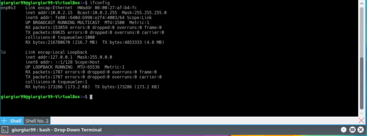

20-01-2018
THIS BOOK MAY CONTAIN EXPLICIT LANGUAGE AND MEMES, READ AT YOUR OWN RISK !!!11
Firefox is a registered trademark of the Mozilla Foundation.
ImageMagick is a registered trademark of ImageMagick Studio LLC.
Linux® is a registered trademark of Linus Torvalds in the U.S. and other countries.
Mac and OS X are trademarks of Apple Inc., registered in the U.S. and other countries.
Open Source is a registered certification mark of the Open Source Initiative.
Oracle and Oracle Linux are trademarks or registered trademarks of Oracle Corporation and/or its affiliates in the United States and other countries.
UNIX is a registered trademark of The Open Group.
Windows is a registered trademark of Microsoft Corporation in the United States and other countries.
JetBrains, PyCharm is a registered trademark of JetBrains.
EuroLinux is a registered trademark of EuroLinux.
All other product names mentioned herein are trademarks of their respective owners.
I’ve written this book, so inserting “Abouth the Author” fell a little - well..
I’m a Linux guy, Red Hat Engineer with a bachelor’s degree in Computer Science currently working at EuroLinux, which is a small, self-funded company that surprisingly (look at the name again) makes Linux-related stuff. As a freelancer, I’ve worked for multiple smaller but also a few more prominent companies. When it comes to teaching/tutoring, I had the pleasure to work for a company that is making programming/testing bootstrap courses. I also worked as the instructor for some of the EuroLinux courses. The current state of my career (do not waste your time looking it up, it’s boring) can be found on my LinkedIn profile - linkedin.com/in/alex-baranowski/ .
Any problems, suggestions and bugs errata are welcome at errata repository https://github.com/AlexBaranowski/bash-bushido-errata, on LinkedIn messages or my e-mail aleksander . baranowski at yahoo dot pl
All accepted errata will be published and free to download for everyone (GitHub repository).
I had the pleasure to write technical blog posts as part of EuroLinux’s marketing strategy. That is when I found out that our subscribers and visitors love shorter forms with lots of titbits. After some practice, I started to produce quite clickable and (what is even more important) readable articles.
Inspired by the Command Line Kung-Fu book, I decided to write a Bash Bushido - a series of articles about Bash. To be honest, we planned that after 2 or 3 articles, the series will end. However, as it was quite successful and there was rich material to explore, we kept going. Unfortunately for international audiences, the series was written in Polish. If you are still interested, you can find all the articles on EuroLinux blog https://pl.euro-linux.com.
Then, one of my friends asked me if I could make a video course with him and publish it on some popular e-learning platforms. I decided to make the pilot project “Bash Bushido Video Course”. After some time, many mistakes, and awful videos, we realized that making a video course without a good script is a horrible idea. The book that you are reading was initially made for the video course :) and ended up as a standalone creation. If this book gains some popularity (at least 1000 sold copies in the first year :), I will make the said video course. Otherwise, it’s probably not worth the only resource that I don’t have a surplus of - time.
I would like to stress that some chapters have a lot of my personal opinions. Don’t treat them as a source of absolute truth. For example, the first thing that I wrote about is touch-typing, that by far (typical opinion) is one of the most important skills for any proficient computer user. I tried to put some humour in this book some of which is sarcastic and might offended you. If you are offended don’t worry - this is natural and should not interfere with your life functions. In the case of emergency, you can delete, burn or depending on the buying platform even return the book (please don’t, I need the monies).
Now let me introduce the minimalistic glossary that will be used throughout the book:
command line, terminal, console are used interchangeably - because you can type the command in the terminal, to the console or on the command line.argument, flag, option. Technically there is little difference (flags are booleans, the options might take one or multiple variables) - but who cares?Bash Bushido is my first (self-published, but still) book. I want to dedicate it to someone who was always there for me – my Mom.
Well, I’m not a Japanese expert (watching chinese cartoons won’t make you one :)), but according to one of the most trusted sources on Internet (Wikipedia)[yeah teachers, I wrote the book, and I am saying that Wikipedia might be a good source!], Bushido means Way of the warrior. In times of rockstar developers and ninja testers, being just a regular warrior might seem a little boring. But I see it quite differently - administration, automation, keeping infrastructure safe and up-to-date is hard work that requires a lot of talent. Sometimes little tweaks in Linux kernel options can save thousands of dollars, one wrong config that gives too broad access might make a company go bankrupt and put users/clients data at risk. In case of infrastructure, you need a warrior, someone who can spend countless hours debugging, testing, tweaking and automating. Lastly, Bash Bushido sounds excellent is meaningful and original.
Well, there are a lot of Linux distributions. You know, like, about few hundreds at the least. From the top of my head, I can list more than 10 package managers, plus one that’s a must for Apple users. The installation steps for each of the popular system/package managers sometimes would be longer than actual trick or tip discussed.
Because of that, I only present the installation procedure for Enterprise Linux version 7.X (CentOS, RHEL, Scientific Linux, Oracle, EuroLinux) these distributions have a long lifespan and won’t be obsolete in next 2 or 3 years.
In countless texts, articles and how-tos we read about a better, faster, or shorter way to do something on the computer. The most prominent example is coping and pasting. Nearly all computer users know that ctrl + c and ctrl + v are the best homework and essay generators friends. Another great example is the ctrl + alt + delete key combination - the must-know for all Windows users.
However, a lot of these tricks, tips and shortcuts are not very handy unless you are touch-typist. Why? Because a lot of them take advantage of typical hands positions on the keyboard during typing. For example, the whole vim navigation was made to use the home row. To get the right position and become the power user, you really should learn how to touch type.
Some readers might not know what touch typing is. Fortunately, there is an excellent definition of touch typing on Wikipedia. To sum it up - touch typing is the ability to use (type on) the keyboard without looking at it.
About 15 minutes per day for 2-3 months at maximum, I saw my ex-girlfriend learn that in less than a month. OK, you’ve got me - I’ve never had a girlfriend, the distant friend of my friend (my friends also never had girlfriends) told that story to me.
This book is committed to the command line and terminal program/stuff. But it’s only fair to say that there are great programs like “klavaro” or “ktouch”, with their fancy GUIs and all necessary lessons, great statistics showing your progress, interfaces, etc.
When it comes to the console, there is one minimalistic program that I can honestly recommend - gtypist. gtypist is ncurses-based, so it’s minimal, yet powerful.
It’s so niched that it’s unavailable in many distributions (like EL). So you have to compile it by yourself. It requires basic ncurser development libraries and C language compiler. In the case of Enterprise Linux, you can simply install @development package group that have a lot of development packages and ncurses-devel package.
sudo yum install -y @development ncurses-develAfter installation completes:
wget https://ftp.gnu.org/gnu/gtypist/gtypist-2.9.5.tar.xz
tar xvf gtypist-2.9.5.tar.xz
cd gtypist-2.9.5/
./configure
make
sudo make installThis will compile gtypist and copy it to the /usr/local/bin directory. Depending on your $PATH environment variable, it should be executable right away.
The program is self-explanatory, there is small help section that you can read, but it is as minimalistic as the program itself. For touch typing newcomers, I endorse the T series, as it’s easier than the Q series. It introduces each key slowly and has extensive exercise patterns, that helps to build the foundation for touch typing.
When it comes to practice time, multiple studies about learning proved that daily short practice sessions are way more effective than long sessions that are not regular. Another important consideration is how to replace the old routine. If you learn how to type a letter correctly, always do it the right way. It’s crucial to replace the old typing habits with the new ones. Because learning takes time at first, you might type slower, but after some time, your speed will increase dramatically.
The default gtypist color scheme might be unreadable on some terminal emulators and color scheme combinations. Luckily, you can experiment and change it.
-c or --colors- set the main colors of the program.--banner-colors - allows setting up all colors used by gtypist. You can choose colors from numbers 0-7, what gives us 64 combinations for foreground and background colors.Sample gtypist invocationwith changed color schemes:
gtypist -c=0,2
gtypist --banner-colors=0,2,3,2 The typefortune is a neat gtypist utility that uses fortune command output and invokes gtypist on it. Because typefortune is written in Perl it requires working interpreter.
Some inexperienced Linux users use arrows to navigate the command line. You can use up and down arrows to change the current position in the history (previously executed commands) and left or right arrow to change the current position of the cursor. It is simple, intuitive and ssssllloooooowww.
When I see a Linux administrator/developer/power user using the arrows to navigate on the command line, something breaks inside of me as this is one of the saddest view in the world. People who operate one of the greatest achievements of humankind (Unix/Linux Operating System) don’t use the console properly! How someone for whom command line is bread and butter for more than ten years might not know the basic key bindings? Well, the answer is obvious - they never read “Bash Bushido”, Bash Manual or info pages about the GNU Readline!
Bash, like most software, uses the external/shared libraries to implement the functionalities. When it comes to reading and manipulating the user input, Bash uses the popular GNU Readline library. One of its core features is the control of the line you are currently typing. This lib (it’s common to use the abbreviation for library) is as old as the Universe Bash. So, it has an extremely stable and mature interface. Actually, lots of software working in the REPL (Read-Eval-Print Loop) manner uses GNU Readline as the input library or readline-like shortcuts to navigate/control the line. Some of the examples are python, perl or psql - the PostgreSQL interactive terminal.
To get the current Readline configuration, you can use bash built-in bind.
[Alex@SpaceShip ~]$ bind -P
abort can be found on "\C-g", "\C-x\C-g", "\e\C-g".
accept-line can be found on "\C-j", "\C-m".
alias-expand-line is not bound to any keys
arrow-key-prefix is not bound to any keys
... (output truncated)There is a ton of commands there! Don’t panic! Throughout this book, you will read about the most important ones.
The ctrl + p shortcut works like the arrow up (which asks Bash history about the previous command). The opposite is ctrl + n (which asks the bash for the next command in the history). With these two shortcuts, you don’t have to move your right hand to the arrow area to go through the Bash history.
[Alex@SpaceShip ~]$ echo 1
1
[Alex@SpaceShip ~]$ echo 2
2
[Alex@SpaceShip ~]$ echo 3
3
[Alex@SpaceShip ~]$ echo 3 # After ctrl+p
[Alex@SpaceShip ~]$ echo 2 # After ctrl+p
[Alex@SpaceShip ~]$ echo 3 # After ctrl+nMnemonics:
ctrl + previous commandctrl + next commandTo move forward by one character, use ctrl + f, and to move the cursor backward by one character, use ctrl + b. After remembering these and previous shortcuts, the arrows become obsolete :).
Mnemonics:
ctrl + forwardctrl + backwardhome and end keysInstead of using home key (moves the cursor to the beginning of the current line) and end key (moves the cursor to the end of the current line), which, by the way, is not that bad (it at least shows that someone can read what is written on the keyboard that she/he/they is sitting in front of for YEARS or even decades of life). You can use ctrl+e key combination that works like the end key and ctrl + a key combination that works like the home key.
Mnemonics:
ctrl + endctrl + append to the beginningYou might ask yourself if it’s really that better than home and end keys. Well, yes! Even if you have to move your left hand a little bit to hit ctrl , the movement is by far shorter than the right hand leaving the typing area to get to the navigation keys area.
Delete and backspaceSurprisingly, many people don’t know the difference between backspace and delete keys. The backspace key removes the character before the cursor, while delete key removes the character under the cursor.
Armed with this theoretically obvious knowledge, you can learn two different shortcuts. ctrl + d removes the character under the cursor. ctrl + h removes the character before the cursor. I hope that you didn’t think there will be an actual shortcut for the backspace key :).
Mnemonics:
ctrl + deletectrl + hrHrHrHrHr - sound that cat a makes when it wants to remove the character before the cursor.Enter!This one is quite useless because the enter key is exceptionally close to your right-hand’s little finger, but if you want, you can use ctrl + j or ctrl + m instead of the regular boring enter key. Both of those shortcuts are bound to the accept-line function.
Up until this moment, you have learned a bunch of useful shortcuts, but each of them can be replaced with a single key-stroke. The really powerful shortcuts are those which are not represented by a single keyboard key - the first one that you will learn is moving forwards and backwards but by the distance of whole words instead of one pitiful character. The alt + f and alt + b key combinations, move the cursor forwards and backwards by one word, respectively.
Mnemonics:
alt + forwardalt + backwardYou might already notice that some shortcuts have a more powerful version when you hit alt key instead of ctrl key. ctrl + d removes one character when alt +d removes the whole word.
Note: There is group of shortcuts that uses both alt and ctrl in most cases the version with alt is way more powerful.
Mnemonics: - alt + delete
To remove all text from the current cursor position to the end of the line use ctrl+k. In order to remove all text from the current cursor position to the start of the line use ctrl+u.
For example, when the cursor is set on the first b letter (shown with the | character):
Mnemonics:
ctrl + kill everythingctrl + uproot everythingWell, there is a little repository I made at https://github.com/AlexBaranowski/bash-shortcuts-teacher. It aims to help you learn the most important Bash shortcuts. Whenever you use arrows, home or end keys, it prints a message that there are shortcuts for that, it is a simple penalty mechanism - you have to remove this message :).
In the previous chapter, we looked into the basic shortcuts that help edit the current line. In this chapter, we are going to look into shortcuts that will boost your performance.
ctrl + l is the one ESSENTIAL shortcut for all power users - it clears the screen, just like the clear command. However, to keep even a simple clear command faithful to the spirit of Bash Bushido, I encourage readers to check what happens when we put clear in a Bash script, then invoke it. You can try it on different terminal emulators to determine if this behaviour is terminal emulator dependent.
Edit note: If your knowledge about the bash history mechanism is near zero, you might read the Bash History chapter first.
To search the Bash history the from current position in the history (most likely the end), use ctrl + r. This key combination is bind to reverse-search-history function. Then type-in the beginning of the command you want to find. Let’s assume that your previous commands look like that:
1 echo "first on history"
...
150 banner "I like this"
...
250 banner2 "I love this"
..
500 echo "I'm last"We also assume here that both banner and banner2 are unique throughout the whole history file. So, after invoking the reverse-search-history and typing “bann” you might get
(reverse-i-search)`bann': banner2 "I love this"After invoking a command, you always arrive at the end of the history. However, if you press esc during the reverse history search, your current position in the history is going to be set to the position of currently found match. In our example with bann, it will be 250. Therefore, a subsequent reverse search will search lines from 250 to 1. So, the next reverse search for “bann” will return the command banner "I like this".
To get back to the end of history, you can use a smooth trick - hit enter with the empty prompt. The other fancier solution is to use end-of-history Readline function that is bound to the alt + > key combination.
The second less-known history search type the is forward-search-history that is bound to ctrl + s. Because in most cases your current position is at the end of the history, it’s not as well known and to be honest - not frequently used. Let’s use our imaginary history file (the one presented above) once again. Firstly, you might use the beginning-of-history Readline function bound to the alt + < key combination, then invoke the forward search and type ‘bann’:
(i-search)`banner': banner "I like this"Mnemonics:
alt + < - start of some section (<) in multiple languages (ex. HTML, XML, C/C++(include, templates, etc.))alt + > end of some section (>) in multiple languages (ex. HTML, XML, C/C++(include, templates, etc))ctrl + reverse - search from the current position in REVERSE modectrl + start - search from the STARTctrl+x then ctrl + v prints the Bash version. If bash is not in 4+ or 5+ version, it means that you are working on a legacy system or Apple MacOS. Apple won’t update bash to 4.X because of the license change to GPL v3+. To be fair, in most cases it’s not a big deal, but if a script uses some newer features (e.g. using associative arrays introduced in Bash 4.0) it can become quite a problem. In the beginning of 2019, version 5.0 was released. I highly recommend reading its release notes.
Mnemonics:
ctrl+x then ctrl + version.ctrl+x - ctrl+expert :)Sometimes when editing a crazy-long line, you might make some mistakes. Then the ctrl + _ can be used to undo the damage change. The same effect can be achieved with ctrl + 7. Both ctrl+_ (note that _ requires the shift key), and ctrl + 7 send the same input to Bash. You can check it with quoted-insert that is described in Making your own command line shortcut.
Mnemonics:
ctrl+x then ctrl + undo.Sometimes there is a need to type a longer script ad-hoc. It’s more convenient to use the favourite text editor than to type the script line by line. For this use-case, there is a great edit-and-execute-command function, that is a bind to the ctrl + x then ctrl + e key combo.
According to bash source code (file bashline.c), the function responsible for this behaviour is actually named edit_and_execute_command. For the default (emacs) key bindings, the command invoked is fc -e \"${VISUAL:-${EDITOR:-emacs}}, which means that the first variable that will be used is VISUAL, then EDITOR (if VISUAL is not set), lastly if none of them worked, emacs will be used. Emacs used to be a popular text editor (I personally know only a few people that use it on a regular basis, but some of the most famous programmers like the great Linus Torvalds [Original creator and Lead of Linux development] love it) made by Richard Stallman (the guy who started the free/libre software movement). A side note, the default Readline bindings are emacs-like :).
To set your favourite editor, you can add the following to your ~/.bashrc file:
EDITOR=vimLastly, because Richard Stallman is in my opinion a very serious figure, here is a not-so-serious Richard Stallman picture. Kawaii-Stallman the guru of 4chan’s /g/ board.
ctrl + alt + e is one of my favourite bash shortcuts. This function can be used to check if a command is aliased, expand a subshell and make a history expansion. There are also other expansions, but they are not as popular as this one. You can find them with bind -P | grep expand.
Examples:
[Alex@SpaceShip BashBushido]$ mkdir {1,2,3}{a,b,c}
[Alex@SpaceShip BashBushido]$ echo $(ls -d 1*) # # `ctrl`+`alt`+`e`
# Changes into
[Alex@SpaceShip BashBushido]$ echo 1a 1b 1c[Alex@SpaceShip BashBushido]$ grep # `ctrl`+`alt`+`e`
# Changes into
[Alex@SpaceShip BashBushido]$ grep --color=auto[Alex@SpaceShip BashBushido]$ history | head -3
1 vim ~/.bashrc
2 vim ~/.bashrc
3 bash
[Alex@SpaceShip BashBushido]$ !2 # `ctrl`+`alt`+`e`
# Changes into
[Alex@SpaceShip BashBushido]$ vim ~/.bashrc Unfortunately shell-expand-line function won’t expand globs.
Because glob might be a new word for some people, here is a minimalistic definition - globs are patterns that specify the pathname. I highly recommend reading the glob(7) manual page. The key biding for glob-expansion is ctrl + x then *. To understand globs let’s look at the following example.
# This shell expansion makes directory a/a a/b and a/c
[Alex@SpaceShip ~]$ mkdir -p a/{a,b,c}/
# This shell expansion makes three empty files with song.mp3 name
[Alex@SpaceShip ~]$ touch a/{a,b,c}/song.mp3
[Alex@SpaceShip ~]$ ls a/*/*mp3
# After hitting glob-expand-word.
[Alex@SpaceShip ~]$ ls a/a/song.mp3 a/b/song.mp3 a/c/song.mp3 Another example:
Alex@Normandy:~/$ ls -1 /etc/[d]*
# After hitting glob-expand-word.
Alex@Normandy:~/$ ll -d /etc/dbus-1 /etc/dconf /etc/default #... output truncatedMnemonics:
ctrl + x then *. The * is a wildcard in the most popular regular expression.NOOO! There are many more functions implemented in Bash and Readline library. So many that some of them aren’t even bound out of box to any shortcut. To list all of them in a nice format with a name, use the previously introduced bind -P command.
The title of this chapter is inspired by the song ‘Love Me Like You Do’. Unfortunately, this song was used (or even made for, I don’t care) in 50 shades of Grey movie (I read about 25% of the first book, it was enough to make me temporary blind). As DevOps/admin/whatever-I-am-even-doing I simply love Vim.
Well, the vi(m) mode sucks. Really. The reason why it sucks is quite easy to explain - the readline (emacs like) configuration is perfect for editing a single line. The strongest features of vim. like home row navigation and the ability to repeat something multiple times are not very useful when you edit a single line. There is also a problem with the fact that Bash does not show the current vim mode (FISH shell for example does) out of the box. What it’s even more irritating is that some of the most useful shortcuts, like ctrl + l, won’t work. Aaaand finally, even with the vi mode enabled you still have to use the subset of commands from emacs mode.
It’s a free country, though, so if you really want to use bash in vi mode, you can enable it with set -o vi.
As a self-proclaimed vim lover, I recommend staying with the emacs shortcuts.
Well, there are three types of people in the Linux world. The first group are those old enough to use a pretty good operating system that includes: mailer, news reader, web browser, directory editor, CVS interface and a finally text editor - emacs. The second group are people who acknowledge that in nearly all distributions, on all servers, there is a minimalistic program called vi. Ahhh, and the last group are normies.
Vim is an abbreviation of Vi IMproved :). You can think about the vi program as a subset of vim functionalities. So, when you dig into the basics of “real” vim, you also learn vi.
Some benefits of using vim:
100dd.Some additional tips:
To learn the basics of vim:
sudo yum install -y vim.vimtutor.Vimtutor should take you about 25-30 minutes, and it’s worth every second of your time.
To make vim your default editor, you can use the following code:
[Alex@SpaceShip ~]$ { grep -q "EDITOR=vim" .bashrc && echo "EDITOR=vim is already set" ; } || echo "export EDITOR=vim" >> ~/.bashrcWell, it’s true - vim is small, even with the best plugins, most popular IDEs will probably in many aspects surpass it. However, as said before, nearly all IDEs have the vim plugin. With this approach, you can get the best of two worlds. A lot of my “serious” development is done with JetBrains IDE’s. Fortunately, the IdeaVim plugin supports all of the most popular operations.
As console warriors, sometimes we must edit remote files. We usually log into a machine and then open our editor of choice. The second option is to copy the file, edit it on our machine then overwrite it on the target machine.
In the first solution, the editor of our choice must be present on the machine (don’t expect vim, but vi will be on 99.9% systems). Even if we had the editor of our choice: we lose the whole (amazing) configuration, favourite plugins and custom key bindings.
The second solution requires three steps (copy, edit, push into the host) - so it might be too long (it’s easy to script though).
Fortunately, there is also another vim specific solution that is way cooler! You can ask vim politely to edit a remote file.
Supported protocols include: - ftp - http - rcp - scp
The best way to start a journey with vim is to use the vimtutor. Other resources that I can recommend are :help that is built in vim, vim.org and vim.fandom websites.
In this chapter, we discuss an exceptionally lightweight topic - how to use calendars from the command line. Calendars are ultra-important tools to keep track of the upcoming events (like birthdays of loved ones or your favourite conferences). According to some productivity practices, you should keep your schedule as full as possible. And in that case, a good calendar client is a must-have.
The most basic calendar in the command line environment is the calendar. The cal program is a part of the util-linux package. In most Linux distros, it’s installed even on the most minimalistic (cloud) images. Invoking cal without an argument prints the current month layout.
[Alex@localhost ~]$ cal
July 2017
Su Mo Tu We Th Fr Sa
1 2 3 4 5 6 7
8 9 10 11 12 13 14
15 16 17 18 19 20 21
22 23 24 25 26 27 28
29 30 31Cal can also be asked about a particular date, in this case my friend’s birthday.
[Alex@localhost ~]$ cal 13 5 1994
July 1994
Su Mo Tu We Th Fr Sa
1 2
3 4 5 6 7 8 9
10 11 12 13 14 15 16
17 18 19 20 21 22 23
24 25 26 27 28 29 30
31There is also a useful option -3 that will print the previous, the current and the next month’s dates.
[Alex@localhost ~]$ cal -3
July 2018
Su Mo Tu We Th Fr Sa
1 2 3 4 5 6 7
8 9 10 11 12 13 14
15 16 17 18 19 20 21
22 23 24 25 26 27 28
29 30 31
August 2018
Su Mo Tu We Th Fr Sa
1 2 3 4
5 6 7 8 9 10 11
12 13 14 15 16 17 18
19 20 21 22 23 24 25
26 27 28 29 30 31
September 2018
... (output truncated)This option can be combined with any given date.
[Alex@localhost ~]$ cal -3 1 7 1994
June 1994
Su Mo Tu We Th Fr Sa
1 2 3 4
5 6 7 8 9 10 11
12 13 14 15 16 17 18
19 20 21 22 23 24 25
26 27 28 29 30
July 1994
Su Mo Tu We Th Fr Sa
1 2
3 4 5 6 7 8 9
10 11 12 13 14 15 16
17 18 19 20 21 22 23
24 25 26 27 28 29 30
31
August 1994
... (output truncated)To print the whole year, type it as the first and only argument.
[Alex@Normandy ~]$ cal 2020
2020
January
Su Mo Tu We Th Fr Sa
1 2 3 4
5 6 7 8 9 10 11
12 13 14 15 16 17 18
19 20 21 22 23 24 25
26 27 28 29 30 31
... (output truncated)Note: United States of the LULZ decided that it’s a good idea to use imperial units, “logical” date format (see picture below) and what is annoying in our case - have a week start set to Sunday. To overcome this cringe use this alias:
One of the most popular Internet calendar services is the one provided by Google with the extremely creative name - Google Calendar. By the way, when the company image is failing, names like “$COMPANY_NAME $PRODUCT” also start to sound bad. But I digress, you can view, edit, delete, and even import events from other sources without leaving the command line! All of this is possible with the gcalcli program. The name is easy to remember Google CALendar Command Line Interface - gcalcli.
Github project page: https://github.com/insanum/gcalcli
To install it you need the pip - the Python package manager. In case of Enterprise Linux it can be be installed from the EPEL repository.
After installation, the gcalcli can be invoked with list argument (a subcommand). If calendar is not configured, it will start the browser to configure access to a Google calendar.
After this straightforward procedure, the list should list an actual calendar.
[Alex@SpaceShip el7]$ gcalcli list
Access Title
------ -----
owner my.gmail.mail@gmail.com
reader Contacts
...To list all calendar events for the week:
To list the week for the particular calendar (my.gmail.mail@gmail.com) combine calw with --calendar option.
To list the whole month, replace week with month in cal subcommand (I feel relaxed looking at the output of this command)
To list holidays, you might use the Holidays calendar.
Making an event is dead simple because it is an interactive form :).
[Alex@SpaceShip el7]$ gcalcli add
Title: Bash Bushido Grammarly check
Location: Cracow
When: 10/10/2018 18:00
Duration (mins): 120
Description: BB check
Enter a valid reminder or '.' to end: 30
Enter a valid reminder or '.' to end: .With a lot of events in the calendar, you might want to search for the chosen event with the search subcommand.
The event deletion functionality searches for matching events first and then asks for removal confirmation.
[Alex@SpaceShip el7_builder]$ gcalcli delete bash
2018-10-10 6:00pm Bash Bushido Grammarly check
Delete? [N]o [y]es [q]uit: y
Deleted!gcali has embedded help invoked with -h or --help parameter. By the way, any option that starts with h will work, so --hasjxcvzvwW also yields a help message. The official GitHub repository’s README.md is also a good source of information about this great program.
The other projects that can be used to manage calendars that support the CalDAV protocol are:
khal - The Khal project requires vdirsyncer to sync the calendars. Because of that, the setup might be tedious (vdirsyncer is a vast project with an extensive documentation).calendar-cli - this one is much easier to setup.Unfortunately, because your calendar provider might implement CalDAV the “right” (bite my shiny metal ass) way, these projects might not work correctly with all calendar services/providers. It happened in my case. Therefore, I would love to say that there are projects that allow manipulating calendars with an excellent command-line interface. However, I won’t recommend and elaborate on any of them as they didn’t work as expected with my “enterprise” Indie calendar provider.
This chapter is dedicated to various Bash configuration options. When Bash starts as interactive shell, the following configuration files are read:
To keep things simple (KISS principle), most Linux users put their configuration into just one file - ‘~/.bashrc’.
Default bash.rc configuration that the user gets by default (at least in most of the distributions) is located in /etc/skel/.bashrc (the content of /etc/skel is copied to the home directory during user creation). In many cases, this .bashrc reads /etc/bashrc that sets the PS1 environmental variable to something like PS1="[\u@\h \W]\\$ "
This prompt translates to [USER@HOST WORKING_DIRECTORY]$. This is a reasonable default configuration for a prompt, that might be enough. However, if you want a colourful, more customized prompt, you can use one of the websites that help you build one (they are amazing and handy). Alternatively, read the PROMPTING section in man bash, and make your own.
My favourite website to make a custom prompt is http://ezprompt.net/ . You can generate your nice colourful, customised prompt there, then copy it to your ~/.bashrc. If this is not enough, you can read about setting up a prompt, how to enable a particular color on text, then make something even more suited to your tastes. This might be particularly useful when your terminal supports True Colour (16 million colours in the terminal instead of 256). There is excellent GitHub gist describing it. It is the first result in the DuckDuckGo search engine (that search engine does not personalise output, so it’s much more reliable than Google). The query that I used is “terminal true colour support”. In the case that this little recommendation doesn’t convince you, here is the link - https://gist.github.com/XVilka/8346728 .
Bash has a special variable PROMPT_COMMAND. According to the Bash documentation:
If set, the value is executed as a command before issuing each primary promptExample:
[Alex@SpaceShip ~]$ export PROMPT_COMMAND='date +%F-%T |tr -d "\n"'
2018-08-20-22:58:22[Alex@SpaceShip ~]$ # Enter
2018-08-20-22:58:23[Alex@SpaceShip ~]$ # Enter
2018-08-20-22:58:26[Alex@SpaceShip ~]$ # EnterBecause literally no one knows about the PROMPT_COMMAND, you can make a little out of season April fool joke. It’s gonna be definitely better than the Diablo Immortal announcement.
For your safety remember if your colleague tries to kill you after doing that, just say
IT'S A PRANK
IT'S JUST A PRANK BRO
-- Anonymous before getting shot.Ok so let’s get to the code
export PROMPT_COMMAND='python -c "import random; import time; time.sleep(random.random()*5)"'Python random.random() will return value [0, 1) (uniform distribution). So, in the worst case scenario, you have to wait 5 seconds for your prompt :). Another thing worth pointing out is that this command works with both Python 2 and 3.
Now you can add it to /etc/.bashrc.
echo "export PROMPT_COMMAND='python -c \"import random; import time; time.sleep(random.random()*5)\"'" | sudo tee -a /etc/bashrcNote that, as according to the documentation PROMPT_COMMAND is invoked only for the interactive session. It might be an IDIOTIC joke (production, critical, non-standard configured hosts, services that start in an interactive session [you shouldn’t do that anyway], etc).
ctrl + l the same?The last thing that I would like to show about the PROMPT_COMMAND is, that there is a difference between clear and ctrl + l. You can export our “prank code”, and check that after the clear command you have to wait for your prompt, but when you use ctrl + l, you get the same cleared screen without waiting. It’s because after ctrl+l, the PROMPT_COMMAND is not invoked.
As you know from the previous chapters, the library responsible for binding shortcuts is GNU Readline. This excellent library allows us to make our own shortcuts with the bind command.
However, before you bind the key to a custom command, you should know the real key code that is sent to the terminal. In the case of ctrl-v the codes are obvious, but what about special keys? For example the F9 key is encoded as ^[[20~. How do I know that? I used the following combination: ctrl-v, then F9. To get information about what function is bound to ctrl + v, invoke:
[Alex@SpaceShip ~]$ bind -P | grep '\C-v'
display-shell-version can be found on "\C-x\C-v".
quoted-insert can be found on "\C-q", "\C-v", "\e[2~".From the following output, it’s obvious that ctrl+v invokes quoted-insert. Quoted-insert is the mode in which the next key combination is displayed in verbatim (key code).
After this short off topic, you can make your own shortcut.In the following example, we bind the F9 key with the date command.
[Alex@SpaceShip BashBushido]$ # ^[[20~ - F9 found in quoted mode
[Alex@SpaceShip BashBushido]$ bind '"\e[20~":"date\n"'
[Alex@SpaceShip BashBushido]$ date # F9
Sun Sep 23 13:43:21 CEST 2018The bind command has the following format bind '"Key/s-code/s":"string that will be inserted"'. Note that there is \n after date, so date the command is instantly executed. Another thing that is worth mentioning (we will discuss it later) is that there is a “translation” from ^[ to \e.
Another example will be ctrl + q bound to date and whoami commands. Some readers might notice that by default ctrl + q it redundantly bound to quoted-insert.
[Alex@SpaceShip BashBushido]$ # ^Q - ctrl-q found in quoted-insert
[Alex@SpaceShip BashBushido]$ bind '"\C-q":"whoami\n"' # ctrl-q
[Alex@SpaceShip BashBushido]$ whoami
AlexThe exercise for reader - does using C-Q instead of C-q change anything? Note that currently our bindings are not persistent, so to “unbind” just start the new terminal/session.
The next example is alt+q that will be bound to the uptime command.
[Alex@SpaceShip BashBushido]$ # ^[q - alt-q found in quoted insert
[Alex@SpaceShip BashBushido]$ bind '"\eq":"uptime\n"'
[Alex@SpaceShip BashBushido]$ uptime # alt-q
14:00:52 up 1:38, 4 users, load average: 0.08, 0.07, 0.21As previously recognized, the bound command won’t work with the direct output of the quoted mode (for example “^[q”). We have to make a little change to the quoted mode format or the output will not be understandable for readline library. For example atl+q verbatim is ^[q that was changed into readline-understandable \eq. The following table shows the simple rules of conversion/translation from one notation to another.
| Notation | Interpretation |
|---|---|
\e |
The escape key. Used also for another binding such as special characters (for example, F9) or connected with meta key. Meta key on most keyboards is known as alt. Used when the prefix is ^[ |
\C- |
Represents the held ctrl key. Used when there is ^ before the key code. |
Exercise for reader get ESC key in the quoted-insert mode.
One of the most important lessons that every SysAdmins/DevOps/ConfigManager(WhatEverNameTheyWantToCallThem) has to go through is that to make a configuration and to make a persistent configuration are two separate activities. In the previous chapter, we made a configuration that will work in the interactive shell and will be forgotten/die with it. Now we will make the configuration persistent. There are two fundamental ways to achieve it.
First, and in my opinion the better way is it to put the bind commands in .bashrc. As said before use KISS - Keep It Simple Stupid principle. Keeping everything in a single rc file is good idea.
Below is a fragment that you can write to your .bashrc.
## Custom key bindings.
bind '"\eq":"uptime\n"'
bind '"\C-q":"date\nwhoami\n"'
bind '"\e[20~":"date\n"'The second one (and by the way more by the book ) - is the use of the configuration file of the readline library (can be overridden with the INPUTRC variable) the $HOME/.inputrc file.
Sample .inputrc file:
"\eq":"uptime\n"
"\C-q":"whoami\n"
"\e[20~":"date\n"As most of readers will quickly notice, the .inputrc has the same format as arguments passed to the bind command. As there is /etc/bashrc there is also the /etc/inputrc file that is a global start-up file used by the Readline library. The inputrc supports comments (“lines started with #”), conditional settings and including other files. For example, in Enterprise Linux distributions (ver 7) the /etc/inputrc has conditional statements like
$if mode=emacs
# for linux console and RH/Debian xterm
"\e[1~": beginning-of-line
"\e[4~": end-of-line
...
...
$endifMore information about inputrc and readline library can be found in the man bash - readline section and the info pages pinfo rluserman.
I would like to notice that there is also an important difference between putting custom bindings into the .bashrc and the .inputrc files. This difference is scope. The bindings from .bashrc works only for the Bash shell, when the biddings from .inputrc are used by any programs that use readline library to get the user input. These programs are mostly interactive shells like python, perl or psql. That is the second reason why I highly recommend putting the bindings into the .bashrc file.
In the previous chapter, I challenged the reader to find how the Escape key is encoded.
[Alex@SpaceShip BashBushido]$ # ^[ - escape
[Alex@SpaceShip BashBushido]$ # ^[q - atl+qWith the previous bind '"\eq":"uptime\n"', there is a possibility to invoke this binding with the following combination esc then q. But there a is huge distinction between the alt+q and the Esc then q combination. Escape will put the ^[ character only once. So, keeping the Esc+q pressed will write uptime\n once, then continue to put the q on your command line. While alt+q will repeatedly write uptime\n as long as the keys are pressed.
To change directory to the previous one just use cd -
This trick works because Bash has the OLDPWD variable set by cd. How can we be sure about that? Well, this time we won’t look into the source code :). Just start a new session and try to use this trick.
[Alex@SpaceShip BashBushido]$ bash
[Alex@SpaceShip BashBushido]$ cd -
bash: cd: OLDPWD not setYou can read more about it in the manual. I highly recommend also checking what cd is really in your shell. Just invoke which cd then type cd. Depending on your Bash version there might be the /usr/bin/cd. But when you try to invoke it it doesn’t work as expected.
Look at the following example:
[Alex@SpaceStation ~]$ pwd
/home/Alex
[Alex@SpaceStation ~]$ /usr/bin/cd /home # it won't work
[Alex@SpaceStation ~]$ pwd # RLY
/home/Alex
[Alex@SpaceStation ~]$ cd /home/
[Alex@SpaceStation home]$ rpm -qf /usr/bin/cd # check which package own the file
bash-4.2.46-31.el7.x86_64
[Alex@SpaceStation home]$ file /usr/bin/cd
/usr/bin/cd: POSIX shell script, ASCII text executable
[Alex@SpaceStation home]$ cat /usr/bin/cd
#!/bin/sh
builtin cd "$@"
[Alex@SpaceStation home]$ builtin cd /home/Alex # builtin work as expected
[Alex@SpaceStation ~]$ pwd
/home/AlexCan you indicate why this didn’t work?
A short story of everyday console user: You are making changes in one directory, then cd to another, then once more to another, then to another. Then you would like to go “back” to the previous one. So, you use cd -, but then you cannot go any further. Your directory “browsing” history is like, well - a single directory. What is even more embarrassing is the fact that in most cases it’s enough - maybe being a Linux power user is not as hard as most people tend to believe ;)?
Nevertheless, there is nice a solution to this situation, the popd and pushd commands. There is also a third command, one called dirs. The pushd changes directory and pushes it to the directory stack, popd pop the directory from the stack and change the directory to the poped value (ofc as long as the stack is not empty). The dirs command prints the current directory stack. The sample usage looks like this.
[Alex@garrus ~]$ pushd /usr/share/
/usr/share ~
[Alex@garrus share]$ dirs
/usr/share ~
[Alex@garrus share]$ pushd ~/workspace/
~/workspace /usr/share ~
[Alex@garrus workspace]$ pushd /etc/sysconfig/
/etc/sysconfig ~/workspace /usr/share ~
[Alex@garrus sysconfig]$ dirs
/etc/sysconfig ~/workspace /usr/share ~
[Alex@garrus sysconfig]$ popd
~/workspace /usr/share ~
[Alex@garrus workspace]$ popd
/usr/share ~
[Alex@garrus share]$ popd
~
[Alex@garrus ~]$ popd
-bash: popd: directory stack emptyHowever, this is BashBushido - we can do it a little bit better and maybe smarter :)! I enjoyed switching from cd to something that better suits me -> pushd with popd.
To do so, I added the following to my .bashrc. I would like to note that this solution is loosely based on “Jonathan M Davis” Unix and Linux Stack Exchange https://unix.stackexchange.com/a/4291/183070
alias cd='pushd'
alias back='popd'
popd()
{
builtin popd > /dev/null
}
pushd()
{
if [ $# -eq 0 ]; then
builtin pushd "${HOME}" > /dev/null
elif [ $1 == "-" ]; then
builtin popd > /dev/null
else
builtin pushd "$1" > /dev/null
fi
}Please note that this solution works well with the default workflow of most Linux users. There is no need to switch the from well-known (even automatic) cd to pushd.
[Alex@garrus ~]$ cd /usr/share/
[Alex@garrus share]$ dirs
/usr/share ~
[Alex@garrus share]$ cd ~/workspace/
[Alex@garrus workspace]$ cd /etc/sysconfig/
[Alex@garrus sysconfig]$ dirs
/etc/sysconfig ~/workspace /usr/share ~
[Alex@garrus sysconfig]$ back
[Alex@garrus workspace]$ dirs
~/workspace /usr/share ~
[Alex@garrus workspace]$ cd -
[Alex@garrus share]$ dirs
/usr/share ~
[Alex@garrus share]$ popd
[Alex@garrus ~]$ dirs
~
[Alex@garrus ~]$ cd -
-bash: popd: directory stack empty
[Alex@garrus ~]$Another nice thing about this solution is that it works as expected with both cd - and empty cd :).
The pushd and popd can also be used in scripts. I personally used them when:
It might look like an overkill but sometimes it’s the simplest solution. In my case, the other solutions used a try-and-error method to reconstruct the data placement.
shopt - is a little shell built-in that can enable some additional shell behaviour. To get a list of options that it can enable, invoke shopt without any argument. One of my favourite options that I used to turn on is autocd. If the first argument (normally the command) is a directory, Bash invokes cd that changes our location to it.
To get what I’m talking about look at the following example:
[Alex@Normandy: BashBushido]$ shopt -s autocd
[Alex@Normandy: BashBushido]$ /home
cd /home
[Alex@Normandy: home]$ /home/Alex
cd /home/Alex
[Alex@Normandy: ~]$ echo $OLDPWD
/home
[Alex@Normandy: ~]$ shopt -u autocd
[Alex@Normandy: ~]$ /home
bash: /home: Is a directoryAs you can deduce shopt -s autocd enables (sets) and shopt -u disables (unsets) the option. The minor inconvenience is that the directory changed this way won’t use our aliased cd command that leverage the pushd and popd (described in the previous chapter). This is the reason why I decided not to use it anymore. On the other hand, it correctly set the OLDPWD variable, what, as said before, is enough for most users.
Because I can and had some free time, I decided to make a simple GitHub website that allows you to generate the .bashrc with options presented through this chapter and many more! You can find it here: https://alexbaranowski.github.io/bash-rc-generator/
Fortunately, we will not concern ourselves with hard to tell, morally ambiguous, and incarnate humans/nations histories. We will talk about the GNU History library that saves and manages the previously typed lines. The chapter will focus on controlling the history behaviour through environment variables, practical tricks and mostly unknown usage. In theory, the Bash history is just simple files that store the previously invoked commands, but as always there is quite a lot to discover! For example, it can save the timestamps or even be shared between concurrent sessions! After this short introduction - Hey HO, Let’s Go!
Down the toilet (like most of my education) ^^. As said before, the Bash history (like nearly everything in Unix) is a file. In this case, it’s a simple text file where each line represents one command.
Let’s look at the following examples:
Alex@Normandy$ echo "I love rock \
> and roll"
I love rock and roll
Alex@Normandy$ echo I love\
> rock and roll
I love rock and roll
Alex@Normandy$ for i in {1..3};
> do
> echo $i
> done
1
2
3
Alex@Normandy$ history | tail -7
...(some commands)
495 echo "I love rock \
and roll"
496 echo I love rock and roll
497 for i in {1..3}; do echo $i; done
498 history | tail -7As you can see, Bash is quite smart and squash longer “blocks” like loops or long commands that are split with \ into a single one.
The file where history is/will be saved is defined by environment variable HISTFILE. HISTFILE has default value set to ~/.bash_history
You can change the variable and save history to the new file. Look at the following listening.
[Alex@SpaceShip ~]$ bash # Invoking the second bash
[Alex@SpaceShip ~]$ export HISTFILE=~/REMOVE_ME_TEST
[Alex@SpaceShip ~]$ echo "NEW HISTORY"
NEW HISTORY
[Alex@SpaceShip ~]$ exit # exit the subshell
exit
[Alex@SpaceShip ~]$ cat ~/REMOVE_ME_TEST
export HISTFILE=~/REMOVE_ME_TEST
echo "NEW HISTORY"
exitTo get the 10 most frequently used commands you can use the following one-liner.
For example
[Alex@SpaceShip ~]$ history | awk '{print $2}' | sort | uniq -c | sed "s/^[ \t]*//" | sort -nr | head -10
62 bind
51 ls
47 echo
27 git
26 cd
19 vim
17 historyAs you can see, before writing this text, I experimented a lot with the bind command.
There are multiple reasons why one would want to delete the history:
/dev/null and HISTSIZE to 0.You can clear your history with history -c.
[vagrant@localhost ~]$ history
1 w
2 df h
3 uname a
...
70 history
[vagrant@localhost ~]$ history -c
[vagrant@localhost ~]$ history
1 history
[vagrant@localhost ~]$It’s worth to mention that after using history -c, the history file is still intact (you might lose the newest part of the history, more about it in the succeeding subparagraphs). It’s because out-of-box history is saved when you end the session.
We can recover freshly (not removed) cleared history with history -r.
[root@kojinew ~]# history
1 cd /etc/pki/some_service/
2 ls
3 ./certgen.sh nothing
...
116 ./certgen.sh
[root@kojinew ~]# history -c
[root@kojinew ~]# history -r
[root@kojinew ~]# history
1 history -r
# ... rest of the history fileMnemonics:
history -clearhistory -readHistory lib is excellent, but it might be annoying when working with multiple terminals (sessions) at the same server at once. They share the starting state of history, then overwrite it. What is also even more frustrating is that this sessions don’t share invoked commands as long as our console session doesn’t end (but then each session overwrites the previous one!). So ideally the following criteria should be met.
You can achieve it with the previously introduced PROMPT_COMMAND.
shopt -s histappend # Set appending to history
# PROMPT_COMMAND was introduced in prevoius chapter
export PROMPT_COMMAND="history -a; history -c; history -r; $PROMPT_COMMAND"History append lines from current session to history file, then clear it then read it.
If you can’t read an important command that was just invoked in another session (terminal), just hit enter with an empty command line. It triggers the PROMPT_COMMAND execution, so that the history resyncs.
The best thing about this solution is also the worst. Imagine that you have separate sessions where you are using quite similar commands. The “collision” with commands from other terminals might be dreadful. Still, it’s one of my favourite bash tricks.
Bash has another variable called HISTTIMEFORMAT. This variable is responsible for the format in which time that the command execution happened is saved/presented. To start fun with the timed history, set it to something meaningful, then export it.
Please note that there is a space after %T. Without it, the commands blend with time. Another thing that is worth noting is that the old history entries (not presented in the current session) are timestamped to the moment when the current session started.
Look at following example:
[root@localhost ~]# su - test_user
Last login: Sun Oct 7 18:32:02 UTC 2018 on pts/0
[test_user@localhost ~]$ export HISTTIMEFORMAT="%Y-%m-%d %T "
[test_user@localhost ~]$ echo 'export HISTTIMEFORMAT="%Y-%m-%d %T "' >> .bashrc
[test_user@localhost ~]$ history
1 2018-10-07 18:32:21 echo "this is test"
2 2018-10-07 18:32:21 echo "This commands are from previous session/s"
3 2018-10-07 18:32:34 export HISTTIMEFORMAT="%Y-%m-%d %T "
4 2018-10-07 18:32:41 echo 'export HISTTIMEFORMAT="%Y-%m-%d %T "' >> .bashrc
5 2018-10-07 18:32:45 history
[test_user@localhost ~]$ And here is where things get even more interesting. Analyse this next example:
[test_user@localhost ~]$ logout
[root@localhost ~]# su - test_user
[test_user@localhost ~]$ echo "After logout"
After logout
[test_user@localhost ~]$ history
1 2018-10-07 18:35:37 echo "this is test"
2 2018-10-07 18:35:37 echo "This commands are from previous session/s"
3 2018-10-07 18:32:34 export HISTTIMEFORMAT="%Y-%m-%d %T "
4 2018-10-07 18:32:41 echo 'export HISTTIMEFORMAT="%Y-%m-%d %T "' >> .bashrc
5 2018-10-07 18:32:45 history
6 2018-10-07 18:35:44 echo "After logout"
7 2018-10-07 18:35:48 history
[test_user@localhost ~]$ So, the previous commands (1,2) have a newer date than the latter (3,4)? BUT WHY? THOUSAND QUESTIONS WITHOUT AN ANSWER? So, let’s log out, then look at our history from another perspective.
[test_user@localhost ~]$ logout
[root@localhost ~]# cat /home/test_user/.bash_history
echo "this is test"
echo "This commands are from previous session/s"
#1538937154
export HISTTIMEFORMAT="%Y-%m-%d %T "
#1538937161
echo 'export HISTTIMEFORMAT="%Y-%m-%d %T "' >> .bashrc
#1538937165
history
#1538937344
echo "After logout"
#1538937348
history
[root@localhost ~]#As you can see, there is a special “#NUMBER”, and this number is a Unix timestamp also called UNIX Epoch time, Unix time or just Epoch. This number represents the number of seconds that passed from 00:00:00 1 January 1970. This is an elegant solution for storing a date with time with 1-second precision. So, the, commands (1,2) have no timestamp; therefore, their execution date and time is set to the start of the shell process.
There is a possibility not to save an executed command. To do so, the space must be the first character. You probably already guessed that there is a particular Bash variable that is responsible for it - and you are right (I love IT because of smart people like YOU!). The HISTCONTROL is the droid variable we are looking for.
HISTCONTROL might be set to the following.
Which one is the most popular? Well, it’s quite easy to check with the GitHub search.
| TYPE | NUMBER | GitHub Query Link |
|---|---|---|
| ignorespace | 8,657 | github.com/search?l=Shell&q=HISTCONTROL%3Dignorespace&type=Code |
| ignoredups | 15.234 | github.com/search?l=Shell&q=HISTCONTROL%3Dignoredups&type=Code |
| erasedups | 5,745 | github.com/search?l=Shell&q=HISTCONTROL%3Derasedups&type=Code |
| ignoreboth | 29,907 | github.com/search?l=Shell&q=HISTCONTROL%3Dignoreboth&type=Code |
The ignoreboth is definitely the winner. This phase is more popular than all competitors combined :). Another thing worth mentioning is that because HISTCONTORL is a colon-separated list, there is a possibility to get ignoreboth with ignorespace:ignoredups.
Now, with all this theory, you might want to look at the following example:
[root@localhost ~]# echo "my_new_pass" | passwd --stdin root
Changing password for user root.
passwd: all authentication tokens updated successfully.
[root@localhost ~]# echo "my_new_pass2" | passwd --stdin root
Changing password for user root.
passwd: all authentication tokens updated successfully.
[root@localhost ~]# history
1 2018-07-31 11:25:55 echo "my_new_pass" | passwd --stdin root
2 2018-07-31 11:26:04 echo "my_new_pass2" | passwd --stdin root
3 2018-07-31 11:26:08 history
[root@localhost ~]# echo "export HISTCONTROL=ignoreboth" >> .bashrc
[root@localhost ~]# . .bashrc
[root@localhost ~]# echo "my_new_pass3" | passwd --stdin root
Changing password for user root.
passwd: all authentication tokens updated successfully.
[root@localhost ~]# history
1 2018-07-31 11:25:55 echo "my_new_pass" | passwd --stdin root
2 2018-07-31 11:26:04 echo "my_new_pass2" | passwd --stdin root
3 2018-07-31 11:26:08 history
4 2018-07-31 11:26:36 echo "export HISTCONTROL=ignoreboth" >> .bashrc
5 2018-07-31 11:26:43 . .bashrc
6 2018-07-31 11:26:53 historyAs the listening shows, the echo "new_pass3" | passwd --stdin root was not saved. Just as expected! Thanks to this, you can safely add secrets, passwords and tokens to commands without thinking about leaking them through the history file.
The default history size might not be suitable for heavily used machines (like the desktops). To get more space for the history entries, we can extend it. There are two variables responsible for it. The first one is HISTSIZE and the second is HISTFILESIZE. During my research, I saw at least two discussions where they weren’t properly described. In the same time, the Bash manual describes them unambiguously. The descriptions below are taken from the Bash manual. As always the ... is the truncated text.
HISTSIZE
The number of commands to remember in the command history... The default value is 500.
...
HISTFILESIZE
The maximum number of lines contained in the history file. When this
variable is assigned a value, the history file is truncated, if necessary,
by removing the oldest entries, to contain no more than that number of
lines. The default value is 500. The history file is also truncated to
this size after writing it when an interactive shell exits.You can set a reasonably long history like 1000 or even 10000 entries without noticing the performance issue. There is also a possibility to discard any history with setting HISTSIZE to 0. In that case, the history will be empty.
Look at the following example:
[root@localhost ~]# history
1 ls
...
15 history
[root@localhost ~]# echo "export HISTSIZE=0" >> .bashrc
[root@localhost ~]# . .bashrc
[root@localhost ~]# history
[root@localhost ~]# cat ~/.bash_history
ls
...
history
echo "export HISTSIZE=0" >> .bashrc
. .bashrc
[root@localhost ~]# logout # After logout the history state is saved
[vagrant@localhost ~]$ sudo -i
[root@localhost ~]# cat .bash_history
[root@localhost ~]# history
[root@localhost ~]# I prefer both settings to be set to 2000, but there is no real science or any more profound thought behind it. So, part of my ~/.bashrc file looks like:
export HISTSIZE=2000
export HISTFILESIZE=2000Well, imagine that you go through the new code repository. After cloning it, you probably will read the README, go through the directories, list the files, go to another directory, grep on file, then list files, then read some file, then go to another directory, list files, grep on files, read a file, and so on. After something like this, your history is going to be cluttered with multiple cd, ls, cat, and grep commands variances.
To keep the more essential commands in the history file, you can ignore the ones that are popular but don’t tell much. For example, cd or ls. Once more, there is a special Bash variable that allows to do so - HISTIGNORE.
The HISTIGNORE that I’m using looks like:
export HISTIGNORE="cd*:false:history:htop:ls*:ll*:la:l:popd:pushd*:reset:top:true"The * makes HISTIGNORE matching everything after the string. Without it, the commands like cd Documents would be saved.
[Alex@SpaceStation ~]$ export HISTIGNORE="cd"
[Alex@SpaceStation ~]$ cd /tmp
[Alex@SpaceStation tmp]$ history | tail -2
518 cd /tmp
519 history | tail -2
[Alex@SpaceStation tmp]$ export HISTIGNORE="cd*"
[Alex@SpaceStation tmp]$ cd /var
[Alex@SpaceStation var]$ history | tail -2
520 export HISTIGNORE="cd*"
521 history | tail -2As mentioned in the previous chapter - you can use the bashrc builder - https://alexbaranowski.github.io/bash-rc-generator/ to build your own bashrc. There is a separate section dedicated to the Bash history settings.
This chapter is dedicated to some advanced Bash features. Because the presented material might be somehow overwhelming, the last subchapter contains the most frequent commands.
! mean in Bash?! is a special character for the Bash shell. It’s a mighty Event Designator. The Bash manual explains it as:
An event designator is a reference to a command line entry in the history list. Unless the reference is absolute, events are relative to the current position in the history list.So easily speaking, ! allow us to reuse the previous commands (stored in the history).
The most common usage of ! (in many cases without knowing what it is) is invoking it with a second !. !! is a special shortcut that says invoke the last command as it was. It’s most frequently used with a privilege escalation via sudo. Look at the following example.
[Alex@SpaceShip ~]$ cat /etc/gshadow | head -1
cat: /etc/gshadow: Permission denied
[Alex@SpaceShip ~]$ sudo !!
sudo cat /etc/gshadow | head -1
root:::
[Alex@SpaceShip ~]$ As said before, this is the most popular event designator usage and one that you can find in nearly every Bash course.
Sometimes, it’s easier to list a subset of commands than to search it interactively. Then you can leverage on event designator by invoking it with ![NUBMER]. Look at the following example:
[Alex@SpaceShip ~]$ history | grep grep
1 grep -v bash /etc/passwd | grep -v nologin
2 grep -n root /etc/passwd
101 grep -c false /etc/passwd
202 grep -i ps ~/.bash* | grep -v history
404 grep nologin /etc/passwd
501 history | grep grep
[Alex@SpaceShip ~]$ !404
# Will invoke `grep nologin /etc/passwd`There is also another trick with negative numbers. In multiple programming languages, the negative indexes mean that we are counting indexes from the end instead of from the start. For example, -1 means the last element on a list and -3 means the third element from the end. The same rule goes with invoking the event designator. Look at the following example:
[Alex@SpaceShip ~]$ echo In Musk We Trust
In Musk We Trust
[Alex@SpaceShip ~]$ echo Mars
Mars
[Alex@SpaceShip ~]$ echo Earth
Earth
[Alex@SpaceShip ~]$ !-2
echo Mars
Mars
[Alex@SpaceShip ~]$ !-2
echo Earth
Earth
[Alex@SpaceShip ~]$ !-2
echo Mars
Mars
[Alex@SpaceShip ~]$ !-2
echo Earth
EarthSome of the readers might have already noticed that we can replace !! with !-1.
To invoke the last command that starts with a given string, use the event designator with a string so that the command looks like !<string>. Example below:
[Alex@SpaceShip cat1]$ whoami
Alex
[Alex@SpaceShip cat1]$ who
Alex :0 2018-04-20 09:37 (:0)
...
[Alex@SpaceShip cat1]$ !who
who
Alex :0 2018-04-20 09:37 (:0)
...
[Alex@SpaceShip cat1]$ !whoa
whoami
Alex!?string? substitutes the most recent command that contains a string. Note that which command is the most recent depends on your position in the history. As said before you can always get to the end of history with empty command line or with ctrl + >.
The usage of !string!? is presented by the following example:
[Alex@SpaceShip ~]$ echo Mamma mia
Mamma mia
[Alex@SpaceShip ~]$ echo ", here I go again"
, here I go again
[Alex@SpaceShip ~]$ !?mia?
echo Mamma mia
Mamma mia
[Alex@SpaceShip ~]$ !?go
echo ", here I go again"
, here I go againNote that you can omit the second ? if there are no additional arguments. To get what it means, look at the example below:
Alex@Normandy$ echo mama mia
mama mia
Alex@Normandy$ !?mama? here I go again
echo mama mia here I go again
mama mia here I go again
Alex@Normandy$ !?mama there are some additional args
bash: !?mama there are some additional args: event not foundAnother huge thing in Bash is the word designator. Once more I decided to cite the part of the Bash manual.
Word designators are used to select desired words from the event. A : separates the event specification from the word designator. It may be omitted if the word designator begins with a ^, $, *, -, or %. Words are numbered from the beginning of the line, with the first word being denoted by 0 (zero). Words are inserted into the current line separated by single spaces.Of course, the word designator is optional, but the quite exciting thing is the fact that it is also optional when we are using modifiers (we will talk about them later). Before showing some samples, I would like to once more quote part of the bash documentation - this time in a tabular form.
| Designator | Function |
|---|---|
0 (zero) |
The zeroth word. For the shell, this is the command word. |
n |
The nth word. |
^ |
The first argument. That is, word 1. |
$ |
The last argument. |
x-y |
A range of words -y abbreviates \0-y. |
* |
All of the words but the zeroth. This is a synonym for ** 1-$ **. It is not an error to use * if there is just one word in the event; the empty string is returned in that case. |
| x* | Abbreviates x-$. |
| x- | Abbreviates x-$ like x*, but omits the last word. |
| % | The word matched by the most recent ?string? search. |
If a word designator is used without an event number, the last event is used.
The word designator usages are presented with the following examples:
[Alex@SpaceShip ~]$ echo use printf `use echo\n`
use printf use echo\n
[Alex@SpaceShip ~]$ !!:2* # You can also use !:2*
printf `use echo\n`
use echoWe can put together arguments from multiple events (commands from the history).
[Alex@SpaceShip ~]$ echo I love rock \'n\' roll
I love rock 'n' roll
[Alex@SpaceShip ~]$ echo I love rock \'n\' roll
I love rock 'n' roll
[Alex@SpaceShip ~]$ echo I love rock \'n\' roll
I love rock 'n' roll
[Alex@SpaceShip ~]$ echo I love rock \'n\' roll
I love rock 'n' roll
[Alex@SpaceShip ~]$ echo I love rock \'n\' roll
I love rock 'n' roll[Alex@SpaceShip ~]$ history | tail -6
583 echo I love rock \'n\' roll
584 echo I love rock \'n\' roll
585 echo I love rock \'n\' roll
586 echo I love rock \'n\' roll
587 echo I love rock \'n\' roll
588 history | tail -6And also use whole arguments groups from the previous commands.
Alex@SpaceShip ~]$ !583:0-3 !584:4*
echo I love rock \'n\' roll
I love rock 'n' rollNow we can get a !! shortcut in another (third) way.
[Alex@SpaceShip ~]$ yum update
...
You need to be root to perform this command.
[Alex@SpaceShip ~]$ sudo !:0*
sudo yum update
...
No packages marked for updateAfter optional word designator, we can execute additional operations, getting even more control over the command line, these operations are called modifiers. Each modifier is prefixed a with : (colons).
For the last time in this chapter, I am going to quote the bash manual (I hope that GNU project won’t sue me) in the form of a table.
| Modifier | do |
|---|---|
| h | Remove a trailing file name component, leaving only the head. |
| t | Remove all leading file name components, leaving the tail. |
| r | Remove a trailing suffix of the form .xxx, leaving the basename. |
| e | Remove all but the trailing suffix. |
| p | Print the new command but do not execute it. |
| q | Quote the substituted words, escaping further substitutions. |
| x | Quote the substituted words as with q, but break into words at blanks and newlines. |
| s/old/new/ | Substitute new for the first occurrence of old in the event line. Any delimiter can be used in place of /. The final delimiter is optional if it is the last character of the event line. The delimiter may be quoted in old and new with a single backslash. If & appears in new, it is replaced by old. A single backslash will quote the &. If old is null, it is set to the last old substituted, or, if no previous history substitutions took place, the last string in a !?string[?] search. |
| & | Repeat the previous substitution. |
| g | Cause changes to be applied over the entire event line. This is used in conjunction with ‘:s’ (e.g., ‘:gs/old/new/’) or ‘:&’. If used with ‘:s’, any delimiter can be used in place of /, and the final delimiter is optional if it is the last character of the event line. And may be used as a synonym for g. |
| G | Apply the following ‘s’ modifier once to each word in the event line. |
Yeah, that a lot! When you think about it s is a substitution, and the rest (&gGqx) of them are controls how this substitution is going to behave. Finally, you can imagine the event designator as following structure:
![number,string or !][:word_designator][:modifier_1][:modifier2]...Modifier can be repeated multiple times. To get different set of words from the word designator you have to write a new event designator.
After this horrible theory, let’s look at some examples:
[Alex@SpaceShip ~]$ echo aaa bbb /a/b/c/aaa.txt
aaa bbb /a/b/c/aaa.txt
[Alex@SpaceShip ~]$ !!:s/aaa/bbb # substitutes aaa with bbb once
echo bbb bbb /a/b/c/aaa.txt
bbb bbb /a/b/c/aaa.txt
[Alex@SpaceShip ~]$ echo aaa bbb /a/b/c/aaa.txt
aaa bbb /a/b/c/aaa.txt
[Alex@SpaceShip ~]$ !:gs/aaa/bbb # substitutes aaa with bbb multiple times, note that there is default value of event designator (last event) so we can use only one `!`
echo bbb bbb /a/b/c/bbb.txt
bbb bbb /a/b/c/bbb.txt
[Alex@SpaceShip ~]$ echo aaa bbb /a/b/c/aaa.txt
aaa bbb /a/b/c/aaa.txt
[Alex@SpaceShip ~]$ echo !!:e
echo .txt
.txt
[Alex@SpaceShip ~]$ echo aaa bbb /a/b/c/aaa.txt
aaa bbb /a/b/c/aaa.txt
[Alex@SpaceShip ~]$ !!:r
echo aaa bbb /a/b/c/aaa
aaa bbb /a/b/c/aaa
[Alex@SpaceShip ~]$ echo aaa bbb /a/b/c/aaa.txt
aaa bbb /a/b/c/aaa.txt
[Alex@SpaceShip ~]$ !!:h
echo aaa bbb /a/b/c
aaa bbb /a/b/cWhen you make a typo or want to change an argument or any other string in the last invoked command, the following trick might be handy - ^old^new^ It replaces the old string with the new. You should also know that substitution by default works only on the first match. Look at the following examples:
[Alex@SpaceShip ~]$ dgi google.com | grep -oE "\b([0-9]{1,3}\.){3}[0-9]{1,3}\b" | head -1
bash: dgi: command not found...
Similar command is: 'dig'
[Alex@SpaceShip ~]$ ^dgi^dig^
dig google.com | grep -oE "\b([0-9]{1,3}\.){3}[0-9]{1,3}\b" | head -1
172.217.16.46
[Alex@SpaceShip ~]$ grep "net.ipv4." /etc/sysctl.conf
...
[Alex@SpaceShip ~]$ ^v4^v6 # Note the absence of last ^
grep "net.ipv6." /etc/sysctl.conf
[Alex@SpaceShip ~]$ echo "echo printf?\n"
echo printf?\n
[Alex@SpaceShip ~]$ echo aaa bbb aaa
aaa bbb aaa
[Alex@SpaceShip ~]$ ^aaa^bbb^ ccc ddd # With new args
echo bbb bbb aaa ccc ddd
bbb bbb aaa ccc dddAs you might suspect, the ^old^new is similar to the usage of the last command with word designator that uses substitution modifier. So finally we can write it as !!:s/old/new/ what is equal !-1:s/old/new what is equal !:s/old/new.
To get multiple substitutions, we can add a word modifier.
[Alex@SpaceShip ~]$ echo aaa bbb aaa
aaa bbb aaa
[Alex@SpaceShip ~]$ ^aaa^ccc^:& # With '&' modifier.
echo ccc bbb ccc
ccc bbb cccThis trick is connected with both Bash history and word designator. There is a possibility to change the special characters of history by setting the histchars env variable. histchars is one of this special variable that for unknown reason is lowercased.
The histchars has three characters that are:
! is default.^ is default.Check these two examples:
Default characters:
[Alex@SpaceShip ~]$ echo "Bash is great"
Bash is great
[Alex@SpaceShip ~]$ !!
echo "Bash is great"
Bash is great
[Alex@SpaceShip ~]$ ^Bash^Fish
echo "Fish is great"
Fish is great
[Alex@SpaceShip ~]$ # This is a commentNow with histchars set to +=@
[Alex@SpaceShip ~]$ histchars="+=@"
[Alex@SpaceShip ~]$ echo "Bash is great"
Bash is great
[Alex@SpaceShip ~]$ ++
echo "Bash is great"
Bash is great
[Alex@SpaceShip ~]$ =Bash=Fish
echo "Fish is great"
Fish is great
[Alex@SpaceShip ~]$ @ This is comment
bash: @: command not found...Imagine that you are writing a fantastic, maybe not as amazing as the one that you are reading, book about Bash. The first thing that you would show might be the famous Hello, world!.
In the case of Bash, you will think probably about something like: echo "Hello World!" After reading this chapter, you probably already know the output.
[Alex@SpaceShip ~]$ echo "Hello, world!"
bash: !": event not foundThe solution is simple - use ' instead of ". However, there are at least two other solutions.
First one is set histchars to nothing.
[Alex@SpaceShip ~]$ histchars=
[Alex@SpaceShip ~]$ echo "Hello, world!"
Hello, world!There is another workaround/nasty hack/possibility. You can disable history expansion with: set +o histexpand.
[Alex@SpaceShip ~]$ set +o histexpand
[Alex@SpaceShip ~]$ echo "Hello, world!"
Hello, world!
[Alex@SpaceShip ~]$ set -o histexpand
[Alex@SpaceShip ~]$ echo "Hello, world!"
bash: !": event not foundIt depends. In my opinion, most of this chapter might be treated as a mental exercise, that I describe because it’s a cool feature that many experienced Bash users don’t know about. It’s obvious that in times of advanced terminal emulators, with support for the mouse (the middle button for copy and paste) and normal copying and pasting, the most of these tricks (especially modifiers) are not as useful as they used to be. So, to sum up, I decided to put the most frequently used commands/tricks:
sudo !!^old^new^![number] and !-[number]!string - Invoking a command starting with the stringAlias is an alternative name for computer, command, object, user, etc. Let’s imagine that you are Rey from the new Star Wars movies. Your email would be like rey@resitance.org. Moreover, probably it will be aliased as mary.sue@resitance.org, disappointment@resitance.org or something similar. In other words, aliases are assumed names, also known as (aka in the Internet slang), or nicknames.
There are thousands of tools that support aliases. In the next chapters, I’m going to present my favourite aliases for the bash and git version control system. Then, together, we will dive a little deeper into aliases in Bash.
The command that is responsible for alias management has quite a surprising name - alias. To print the currently used aliases use:
Alex@Normandy$ alias
alias back='popd'
(...) # truncatedBy the way - bash help states that the -p option is responsible for printing aliases in a reusable format, but there is no real difference between empty alias and alias -p. The only difference that this option makes is when defining the new alias - it also prints all other aliases (with the new one ;)).
To define a new alias, use `alias alias_name=‘command args’.
There are some aliases that I’m using in my very own environment.
alias sudo='sudo '
alias ..='cd ..'
alias ...='cd ../..'
alias ....='cd ../../..'
alias .....='cd ../../../..'
alias picnic='espeak "problem in chair, not in computer"'
alias r='reset'
alias c='clear'
alias lh='ls -AlhF --color=auto'
hash colordiff &> /dev/null && alias diff='colordiff'
alias mkdir='mkdir -pv'
alias now='date +"%F-%T; %V week"'
alias my_ip='curl -s ifconfig.co/json | python3 -m json.tool'The important and interesting alias is alias sudo='sudo '. To get why I’m aliasing sudo let’s look at the following example.
[Alex@SpaceShip BashBushido]$ alias ok='echo OK'
[Alex@SpaceShip BashBushido]$ sudo ok
sudo: ok: command not found
[Alex@SpaceShip BashBushido]$ alias sudo='sudo '
[Alex@SpaceShip BashBushido]$ sudo ok
OK
[Alex@SpaceShip BashBushido]$ The reason why aliased sudo works perfectly fine with aliases is described in ALIASES section of the Bash manual.
ALIASES
...
If the last character of the alias value is a blank, then the next command word following the alias is also checked for alias expansion.Going back to my favourite aliases. The directory aliases are self-explanatory. picnic uses espeak to express my displeasure with some of “URGENT TECHNICAL QUESTIONS” that I have to support. Aliased mkdir is verbose and makes parent directories so that I can make full paths at once. now prints the date with the current week number (I set my personal annual goals, so it’s important). diff set colordiff instead of regular diff. However, before aliasing this one checks if colordiff is installed. Finally, you can read more about my_ip further in the book.
Git is the most successful/popular version control system (VCS) currently used. The original author is The Great Linus Torvalds himself. Git is another excellent project made by/for the Linux community that spread like cancer the best open source software. There is plenty of great, free, sources on Git. If you are unfamiliar with this best in the class version control system, you might look at the official free book Pro Git. I bow down to the Authors of this excellent publication.
Git commands might be tedious, but git supports aliases, so instead of long commands, you can type few characters and make some magic. From git 1.5 (really ancient one :)), git supports executing external shell commands in aliases. The command must be prefixed with !.
My aliases from ~/.gitconfig
[alias]
lol = log --graph --pretty=oneline --decorate --abbrev-commit --all
ls = log --pretty=format:"%C(yellow)%h%Cred%d\\ %Creset%s%Cblue\\ [%cn]" --decorate
s = status -bs
a = add
b = branch
c = commit
ci = commit --interactive
r = reset
rv = checkout --
git-fuckit = !git clean -d -x -f && git reset --hard
ohh = !git add -A . && git commit --amendThe short aliases allow saving some typing. The other are pearls that I found on the Internet - like git-fuckit, others were given by friends, and ohh alias is what I’m saying before swearing :).
However, aliases can also be added from the command line (it’s useful if you have a bootstrap script, that should not override the configuration that already exists). For example, the lol alias can be added with:
git config --global alias.lol 'log --graph --pretty=oneline --decorate --abbrev-commit --all'As said before - if you are unfamiliar with Git, please consult the other sources.
Many people share their configuration files on GitHub, GitLab or BitBucket. Hackers (ppl who have exceptional software skill) share their config in repositories that are usually named ‘dotfiles’. There is a great site on this topic - https://dotfiles.github.io/ . It’s excellent to start and find the most known configurations for many programs (like emacs or vim) or shells :).
To check what command really is you can use type shell builtin. Type for all possible returned values
[Alex@SpaceShip ~]$ type type
type is a shell builtin
[Alex@SpaceShip ~]$ type bash
bash is /usr/bin/bash
[Alex@SpaceShip ~]$ type case
case is a shell keyword
[Alex@SpaceShip ~]$ type which
which is aliased to 'alias | /usr/bin/which --tty-only --read-alias --show-dot --show-tilde'
[Alex@SpaceShip ~]$ type command_not_found_handle
command_not_found_handle is a function
command_not_found_handle ()
{
...
}
[Alex@SpaceShip ~]$ type asdsadf
bash: type: asdsadf: not foundThe most useful option of type is -t flag that prints only a single word. It’s useful for scripting.
[Alex@SpaceShip ~]$ type -t type
builtin
[Alex@SpaceShip ~]$ type -t bash
file
[Alex@SpaceShip ~]$ type -t case
keyword
[Alex@SpaceShip ~]$ type -t which
alias
[Alex@SpaceShip ~]$ type -t command_not_found_handle
function
[Alex@SpaceShip ~]$ type -t asdfasdf
[Alex@SpaceShip ~]$We have at least 5 way to do it, 4 of them are easy to script, the last one should be already known to an attentive reader.
type shell built-inwhich.alias to print all aliases.BASH_ALIASES variableshell-expand-line.[Alex@SpaceShip ~]$ alias
alias egrep='egrep --color=auto'
alias fgrep='fgrep --color=auto'
alias grep='grep --color=auto'
alias l.='ls -d .* --color=auto'
alias ll='ls -l --color=auto'
alias ls='ls --color=auto'
alias vi='vim'
alias which='alias | /usr/bin/which --tty-only --read-alias --show-dot --show-tilde'
[Alex@SpaceShip ~]$ which fgrep
alias fgrep='fgrep --color=auto'
/usr/bin/fgrep
[Alex@SpaceShip ~]$ echo ${BASH_ALIASES[fgrep]}
fgrep --color=auto
[Alex@SpaceShip ~]$ type -t fgrep
alias
[Alex@SpaceShip ~]$ fgrep
# after hitting shell-expand-line shortcut `ctrl`+`alt`+`e`
[Alex@SpaceShip ~]$ fgrep --color=autoSometimes, we want to invoke an not aliased version of a command. There are at least two ways of doing that:
\ before a command.Look at following listening:
[Alex@SpaceShip eurolinux7]$ ls
Dockerfile
[Alex@SpaceShip eurolinux7]$ alias ls='echo Hit Me with Your Best Shot'
[Alex@SpaceShip eurolinux7]$ ls
Hit Me with Your Best Shot
[Alex@SpaceShip eurolinux7]$ \ls
DockerfileMost of the aliases presented in this chapter can also be found in the previously introduced bashrc generator - https://alexbaranowski.github.io/bash-rc-generator/
In this chapter, I will introduce the top-rated tools for viewing and monitoring Linux processes. There are many tools that help gather different statistics about the system, processes, hardware, software, etc. However, I decided to present top and htop process viewers/monitors because they combine most of the useful ones in one place. If you are interested in getting more into the processes, how to monitor system with basics tools. I recommend reading more about procps-ng and programs maintained by this project (the top is one of them).
As said before, the top is one of the most well-known Unix (and Linux) programs. Most Linux distributions use the rewritten and much-improved version of the old Unix top, the project that rewrote these tools with Linux in mind is procps-ng.
It’s quite popular in the free software world to give -ng suffix to the newer (in most cases rewritten or written from scratch) version of well-known and established software.
Even if the old Unix style top is similar, most of the tricks presented in the next chapters won’t work! Below is the image of the top invoked in the FreeBSD system.
The top itself presents a set of useful statistics about the current system load/health/behaviour and processes running inside of it. However, output and usage of the top program might be a little overwhelming, so I decided that we can together get through it :) one step at the time.
Because procps-ng package (or procps in SUSE family) is part of the core (or minimal) package group, in most (definitely in any reasonable modern distro) cases, it is installed by default. Therefore, the top doesn’t require any extra steps to install.
To invoke the top just type its name, additional arguments are not required.
After invoking the top, you should get something like:
As said earlier, the top might be overwhelming, let me decompose its output:
On the first line, we have the name with which the top was invoked (you can have multiple top configurations with different top name), then, the current time and uptime (how long the system has been running) are shown.
The following information is the number of “users”. Note that it counts users the same way as other procps-ng commands, so it counts open user sessions (terminals).
Then there is extremely important statistic - load average. Load average says under what load our system was in the last 1, 5 and 15 minutes. By rule of thumb, the number of load average should be less than CPU (threads) count. Load average says how many processes wait to be run, so its possible values range from 0 to infinity.
There is also an older statistic that is not present in the top,and it’s the CPU utilization. The problem with the CPU utilization is that it’s value is from 0 to CPU or Threads Count. So, it is a bounded function.
Let’s imagine that we have CPU that has 8 cores and disabled HyperThreading or similar technologies. The CPU utilization equal to 8 and the load average corresponding to 8 will result in a system that is still quite responsive, fully loaded but not overloaded. The CPU Utilization equal to 8 and load average equal to 123 will mean that the system is severely overloaded, and it’s hard to make even the simplest administrative operations on it.
The last thing that I would like to note is that the first top line is identical to other procps-ng programs like w and uptime.
The next part considers task or threads (depending on mode) that are managed by the Linux Kernel, and their states. It’s quite easy to see that the top doesn’t report all states because of the “total.” the number is not equal to the sum of all others. The reason for it is that not all states that process can be in are listed, for example, the idle process state is not present.
To get all process states that are present in our system, one can use this simple one-liner.
ps ax -o state | sort | uniq
# OR with count
ps ax -o state | sort | uniq -c One of the most interesting columns here is the one counting zombie processes. To simplify - zombies are processes that have finished their run, and they are waiting for wait() from the parent process. It’s uncommon to see them because most programs can adequately deal with their children and in the case of an orphaned process (one whose parent has finished execution before its children), the init system (like systemd) automatically will call wait when adopting them. To sum this up, the multiple conditions must be met for the zombie process to occur.
The next line has info about the CPU States - there are following states:
In an alternative mode where the CPU report percentage of usage in a graph from. The graph has the following format:
[us+ni]/[sy] [sum of all excluding idle][Graph]After Task/Threads statistics, comes the memory usage section. The free section says how much memory wasn’t used by the kernel, the used says how much memory is really used, the buff/cache is responsible for counting memory used by caching mechanism that makes a system faster by miles. The most important statistic is presented in the next line. avail Mem shows memory that can be allocated by the kernel (in most cases with reducing buff/cache).
This value doesn’t count the swap space! There is a little . before avail Mem that tries to separate the information about the swap and continued physical memory statistics. Unfortunately, this might be counterintuitive. Example without any swappable memory in the system that has correctly counted/displayed available memory:
The swappable (sometimes called extended) memory statistics are self-explanatory.
The last part of top top is a called “task area”.
By default, there are the following columns (fields) in the task area:
man 1 nice and man 2 nice.+ Means that it’s presented in hundredths of seconds.Before making the customization, I strongly recommend making the top symlink and then invoking top by it.
Now, the first line of the top will start with my_top -. This is a feature based on the fact that the top, as any program invoked in the Linux, knows its name. The top uses this information to give you the ability to make and maintain multiple configurations.
The first practical thing that I recommend is to change the memory units. The top in opposite to htop doesn’t have intelligent unit scaling, it’s static and uses KiB that are too small to get clean information on most systems. Two keys are responsible for memory scaling - e and E. First, use E to scale what unit is used to display memory in summary area. Then use e to change how the memory is shown in the task area. I personally scale to megabytes or gigabytes (I have never managed a server that had more than 1024 GB of RAM [and I’m not ashamed of it!]).
Now we can commit our first changes. To save the current top settings, use W key. Depending on procps-ng version the top rcfile will be placed in ${HOME}/.${NAME}rc or ${HOME}/.config/procps/.${NAME}rc in the newer version. In the newer version the legacy path (~/.toprc) is read first, then the one from XDG_CONFIG_HOME variable (by default set to ~/.config, XDG_* variables are one defined by X Desktop Group) is used.
The next important setting that I change updates the update interval (time between refreshing the statistics). The default value is 3 seconds. Delay value can be set with d like delay or s like seconds to the requested amount. The value that I personally prefer is 5 seconds. But there is a possibility to use absurd values from nearly zero like 0.00001 (the real-time between refreshing will depend on the host performance; the top will consume 100% [one] CPU) to more than 31536000 (exactly one year). The highest value that I can get is 2147483520.0 (when you add a small number to it the top will still use 2147483520.0, and in case of using more than 2147483583 the top will report Unacceptable floating point.). But I believe that it depends on the version, architecture and so on :). BTW 2147483520.0 is over 68 years, so probably more than I will live :).
In the field management interactive menu, that is bound to the f key, you can choose which fields are displayed. Choose a field with up/down arrow, enable them with space, and move them with the right arrow, then up/down and left to put in the desired place with the left arrow. To choose the default sort field use the s key. BTW: The default sort field doesn’t have to be enabled! In field management mode, you can also set the other windows that are available in Alt-display (alternative display mode, with four different windows). To change the currently edited window use the w key. The window that is used in the default mode is named 1:Def like DEFault :).
In my case, I enabled the nTH field and USED field then disabled the VIRT field. After it, I sorted the fields in the following manner PID, USER, COMMAND, S, %CPU, nTH, USED, RES, SHR, %MEM, TIME+, NI, PR.
With fields the setup we can exit editing SINGLE q (double will exit the top, without saving the configuration!), then use already known W to make the configuration persistent.
When it comes to the fields, I highly recommend not to trust the SWAP field. As said, before the VIRT in many cases might be a little misleading metric. Because the top emulates the SWAP field with a simple formula SWAP=VIRT-RES in most cases, it is plain wrong. You can observe the SWAP field having value greater than 0 on systems that don’t have any swap memory enabled.
The last configuration adjustment that I made is the color change. I know that many IT people (with a noble exception of UI/UX department) is not able to list more than 3 colors, but even if you are one (I’m saying this to myself) that hates to set colors - Don’t Panic! - the top allows using a whole stunning palette of 8 colors! So with little trial and error method you can get satisfying results. Before editing colors, you must enable them with the z key that is a typical toggle.
To invoke color change mode use the Z key. With S,M, H, T, choose the target (part of the top), and then with numbers between 0-7 select the colors. After this operation, use Enter to save current the settings and then W to make them persistent.
In my case, I used S2 M1 H4 T7 that in my opinion look acceptable.
One of the most essential functionality in the top is the ability to sort the processes by a given filter or measurement.
Two most popular are:
M - sorts by memory usage - Memory.P - sorts by processor usage (%CPU) - Processor.The other filters/sorts include:
u - Filter on the username - user.T - Sort by TIME+ (consumed CPU time) - Time.N - Sort by PID - Number.In order to flip the order of sorting (DESC/ASC) use R like Reverse :).
The field on which the top will sort can also be chosen in the interactive field management (f or F).
I will take the first and most important advice straight from the top manual
When operating top, the two most important keys are a help (’h’ or ’?’) and quit (’q’) key.So, if anything is unclear, just use the built-in help or read the man 1 top.
Because the top is potent and robust, there is no need/way to memorize all keys and settings. As said before, when in doubt, use the help or the manual. Netherless I’m going to present the most important ones.
P - sort processes by CPU usage - Processor.M - sort processes by memory usage - Memory.n - sort by PID - number.< and > - change the sort field.u - filter by username.R - Reverse sort order.k - send a signal to a process, in most cases to kill the process. The default signal is 15 SIGTERM, in an act of desperation you can use 9 SIGKILL that is more powerful than the default SIGTERM. SIGKILL is signal that cannot be ignored and is practically always fatal. Any valid Linux signal can be used.r - renice process.A - enter/exit alternate-display mode.w or a - change currently managed window.Note that in alternate-display mode each has its own field and color configuration.
1,2,3` - change the way that CPU/S are showed. Note that first and seconds have two submodes.t - change the way the CPU load is showed.m - change the way that memory is showedl - enable/disable the first line.H - toggle between threads and tasks.c - enable/disable the absolute command path.g - change the the current window (task area) to another (the naming is not that clear, onc time we talk about windows, other times, it is called a field group and a task areas).V - enable the forest mode. In this mode, the top shows the output in a tree format quite similar to pstree command but within fields of the task area.I highly recommend trying each of the presented keys, modes, and configurations. Then try to find the setting that suits you the most.
The name htop came from Hisham top - the first letter is from the name of the program author, but I personally remember it with the HyperTOP mnemonic. htop is a better, easier-to-use, cleaner and more powerful, version of the top. It’s a self-desscriptive and easy-to-discover program. The only drawback of htop is that it is not a part of the proc-ng so:
htop, some vendors might mark your system as unsupportable, that is well … stupid as f***.To install htop on Enterprise Linux distributions, you need the EPEL repository.
sudo yum install -y epel-release; The epel-release is a package that sets up EPEL, so it contains repository info, GPG keys and a preset that is used by the systemd. After installing EPEL, the htop can easily be installed with yum.
sudo yum install -y htopIf your vendor is not sane, you can compile the htop and place it into a not standard path, that won’t be gathered by the sosreport or any other system state gathering utility.
Compiling the htop is extremely easy.
# Install build dependencies
sudo yum install -y @development git libncursesw ncurses-devel
# Compilation
git clone https://github.com/hishamhm/htop.git
cd htop
./autogen.sh && ./configure && make
sudo make installNote that these commands will install the htop in the default location. In order to install htop in different path, use
./autogen.sh && ./configure --perfix=/somewhere/over/rainbow && makeRegarding the installation method, the htop can be invoked, like a top, without any argument. So, to start it, just type htop on the command line.
We can start our customization by looking into help (F1 from the bottom menu). In many cases, there is a little problem. The F1 key is bound to the terminal emulator itself (in my case the terminator) and invokes the its’ help. What can you do to get to open the htop help? Well, it might sound funny, but try to click F1 button. Yeah, click it with a mouse. Contrary to the prevailing opinion, it is possible to write the console program with support for the mouse. Some ncurses based programs actually support this feature, and htop is one of them. The other options to get built-in help are the well-known top-like ? or h keys.
With the help read, we can start the setup of our htop. The configuration file is saved in ~/.config/htop/htoprc, and despite the comment of the author, the simpler parser used to read the config made the configuration file human friendly.
The htop with default configuration looks like:
To start the customization, enter the Setup with F2 key or click on the Setup with mouse :). The first thing that is worth noting is that the meters section has two columns, and we can freely change the position of all elements. To change the position of an element (meter), select it (or use the mouse ;)), then use Enter to enter the element move or add mode, then use arrows to move it to the chosen place, then hit Enter one more time to commit the change. To change the style of the meter printing (for example, bar chart, text information, or seven-segment display ) use the space key.
The first thing that I’m always doing is removing the CPUs information broken down into individual CPUs. It’s really not practical when working with an 8+ CPUs system (there are some edge cases when it might be useful, for example, if there is a single thread application, but most services [DB, WEB, Network file systems] support multiprocessing and multithreading). To remove this information I choose (CPU 1/2 then CPU 2/2) metric then use the delete key. As nearly always in htop it’s possible to achieve same with the mouse. Next, I add the CPU Average metric, and put it on the top of the left column and change the printing style to Text.
I make similar changes until my left column has:
And my right column has:
I use the battery because my basic computer is my notebook. But I’m part of the Glorious PC Gaming Master Race.
Honestly, I have a great gaming setup that I’m not using because of the lack of time. Sometimes I wish one day to become rich and spend like a whole week gaming! Of course, real gamers will consider this amount of time as pathetic.
Back to the main topic - the next section is Display options. I have the following enabled:
Because in most cases (might depend on your terminal settings), the default colors scheme is excellent, I will skip Colors section, especially that htop provides built-in themes so there is no much to set.
The last setup configuration phase is setting up the Columns, called Fields in the top, I remove VIRT (M_SIZE), metric and for my setup, this is the end of this phase. There is a little curious that you can add the OMM column, that gives Out-of-Memory (OMM) killer score. This might be useful for exceptionally heavily loaded systems.
After the setup use the F10 key to save changes.
My htop configurations after changes:
To search for or filter a process, you can use the F3 or F4 key. Search will look for a single process that command matches the search string. You can kill, renice or get environment information about the selected (or found) process. The filter will show all processes that match the search string, the example below filters processes that have haroopad in a name. Note that in both cases the search string is not a regular expression.
The htop can also search for processes by PID. To do that, just type the PID. The search is incremental. To get what it means - look at the following example:
Imagine that we have the following PIDs:
In that case the steps of searching and the results will look like:
To sort processes, you can simply use F6, then select a column. As said before, in some terminal emulators, you can also take an advantage of your mouse to click on the column. What is quite obvious, but still worth mentioning, is that sorting might be combined with filters. You can invert the sort order with the I key.
The last type of filters that I would like to demonstrate is filtering by a user - to do so, use the u key then choose the user from the list - it’s much more convenient than having to type the whole username in the top. What is also worth mentioning is that you can type the username and as soon as there is only one match the htop will move the cursor to that user. For example, imagine that you have a user - root and rpc. When r is typed, nothing happens, but when the next letter p is inserted, rpc user will be selected.
top compatibility keys in htopM - Sort processes by memory usage.P - Sort processes by CPU usage.T - Sort processes by time consumed by process.k - Sends chosen signal, mostly used to kill a process.p - print absolute command pathe - Shows the environment of the selected process.s - Enable strace mode of the process (requires strace).l - display open files (requires lsof).I - Invert the sort order.a - Set CPU affinity: set which CPUs process can use.i - set IO/Priority (uses ionice).<, >, ., , F6 - set the sorting field.After reading this chapter, manuals man 1 top and man 1 htop, you should understand not only how to use these programs, but also learn a lot about process-related topics like what is priority or state in which the processes can be. I also highly recommend man 5 proc that provides information about the Linux /proc pseudo-file system.
In this chapter, we will look into the way of printing the letters, symbols, even some kind of Linux memes. Please note that the knowledge from this chapter is not very helpful when it comes to being a SysAdmin or DevOps.
The banner is a quite old program (so old that its original code is barely readable [sh**load of conditional compilation for computers older than a transistor ;)]), that prints given string in a gigantic letters.
Installation on an Enterprise Linux machine (requires EPEL):
sudo yum install -y epel-release
sudo yum install -y bannerIn any other distribution, please try to find it with your package manager, in most cases, it’s called banner or sysvbaner. Die-hard compilation fans can find the sources and easily compile it.
With banner installed, now we can answer the development team lead when he/she/they (gender neutral alphabetical order) asks “Why our application doesn’t work in a production environment?”.
[vagrant@localhost ~]$ banner you sucks
# # ####### # # ##### # # ##### # # #####
# # # # # # # # # # # # # # # #
# # # # # # # # # # # # #
# # # # # ##### # # # ### #####
# # # # # # # # # # # #
# # # # # # # # # # # # # # #
# ####### ##### ##### ##### ##### # # ##### Well, that’s like all that the banner can do. This program is dead simple. In the default implementation, there is not much more that you can do. I personally made my own implementation that can be found at the GitHub - https://github.com/AlexBaranowski/Banner.
I’m not very proud of this program, but since I mentioned it, I would like to give you a glimpse how to use it. To compile my version of the banner you can use following commands.
git clone git@github.com:AlexBaranowski/Banner.git
cd Banner
make
sudo make installAfter this, there should be /usr/bin/banner, that should also be available with your $PATH environment variable. The general options for my banner are
I would like to give two examples. The first one with the same printing character as the printed character.
Alex@Normandy$ banner -s "I Love U"
IIIII L U U
I L U U
I L oooo v v eeee U U
I L o o v v e e U U
I L o o v v eeeeee U U
I L o o v v e U U
IIIII LLLLLL oooo v eeee UUU Second one is with the custom character set to **@**.
Alex@Normandy$ banner -c@ "Kiss"
@ @
@ @ @
@ @ @@@@ @@@@
@@@ @@ @ @
@ @ @ @@@@ @@@@
@ @ @ @ @
@ @ @@@@@ @@@@@ @@@@@ Once more my personal implementation of the banner is a also simple program, so there is no much more that you can do.
Have you ever used torrent? You probably did! You nasty thief broke student freedom fighter! So, you know that there is always a “kick-ass” signature of pirates thieves freedom fighters’ group that can be found in the README.txt file. You can achieve the same effect with FIGlet. The little program that “displays large characters made up of ordinary screen characters”.
Installation on EL machine (requires EPEL):
Sample FIGlets of “famous” hacker groups.
$ figlet 'H@Ck01'
_ _ ____ ____ _ ___ _
| | | | / __ \ / ___| | __/ _ \/ |
| |_| |/ / _` | | | |/ / | | | |
| _ | | (_| | |___| <| |_| | |
|_| |_|\ \__,_|\____|_|\_\\___/|_|
\____/ The FIGlet has a built-in support for fonts (flf file extension), so we can deeply customize its output. To get the default font names we can query rpm for files instaled from a FIGlet package.
$ rpm -ql figlet | grep flf | sed 's:.*/::' | sed "s/.flf//"
banner
...
termThe following script will print all fonts with a sample output.
#!/bin/bash
for i in $(rpm -ql figlet | grep flf | sed 's:.*/::' | sed "s/.flf//");
do
figlet -f "$i" "font: $i" ;
doneAnother option is to use find to find a file instead of listing them with rpm.
FIGLET_DIR=/usr/share/figlet
for i in $(find $FIGLET_DIR -iname '*flf' | sed 's:.*/::' | sed "s/.flf//");
do
figlet -f "$i" "font: $i" ;
doneMy favourite font is slant. There is a secret message that I would like to send to all people that supported and bought this book.
$ figlet -f slant 'thank you <3'
__ __ __ __ _____
/ /_/ /_ ____ _____ / /__ __ ______ __ __ / / |__ /
/ __/ __ \/ __ `/ __ \/ //_/ / / / / __ \/ / / / / / /_ <
/ /_/ / / / /_/ / / / / ,< / /_/ / /_/ / /_/ / \ \ ___/ /
\__/_/ /_/\__,_/_/ /_/_/|_| \__, /\____/\__,_/ \_\/____/
/____/ Another well-known alternative way to print the message in the terminal is cowsay. It uses ASCII-Art cow. Not many Linux users know that there are also symlinked versions like cowthink that is printing a “thinking cow” :). Moreover, cowsay has multiple modes, that we will discuss further.
On Enterprise Linux distributions package cowsay can be installed from the EPEL repository . Installation is as straight forward as:
Sample cowsays:
Alex@Normandy:~$ cowsay help me!
__________
< help me! >
----------
\ ^__^
\ (oo)\_______
(__)\ )\/\
||----w |
|| ||The first customization is called a mod (or modifier). Depending on the version of cowsay, different modes could be found. In the version that I’m using, there are the following modifiers:
There are also multiple images that can be used instead of a standard cow. They are located in /usr/share/cowsay/ and have “.cow” file extension.
This short script will iterate through all extra cow ASCII pictures and print a message with the name of the used image. -W parameter sets the terminal width to 100 characters.
Here are sample cowsays that use different fonts (images):
Alex@Normandy:~$ cowsay -f kiss 'Sorry baby - I choose Bash Bushido over you!'
_________________________________________
/ Sorry baby - I choose Bash Bushido over \
\ you! /
-----------------------------------------
\
\
,;;;;;;;,
;;;;;;;;;;;,
;;;;;'_____;'
;;;(/))))|((\
_;;((((((|))))
/ |_\\\\\\\\\\\\
.--~( \ ~))))))))))))
/ \ `\-(((((((((((\\
| | `\ ) |\ /|)
| | `. _/ \_____/ |
| , `\~ /
| \ \ /
| `. `\| /
| ~- `\ /
\____~._/~ -_, (\
|-----|\ \ ';;
| | :;;;' \
| / | |
| | |Alex@Normandy:~$ cowsay -f surgery Where are my testicles, Summer?
_________________________________
< Where are my testicles, Summer? >
---------------------------------
\ \ /
\ \/
(__) /\
(oo) O O
_\/_ //
* ( ) //
\ (\\ //
\( \\ )
( \\ ) /\
___[\______/^^^^^^^\__/) o-)__
|\__[=======______//________)__\
\|_______________//____________|
||| || //|| |||
||| || @.|| |||
|| \/ .\/ ||
. .
'.'.`
COW-OPERATION
Ansible has a stupid and irritating brilliant ‘easter egg’ that print steps of playbooks with cowsay. In order to turn it off add nocows = 1 line to ansible.cfg (in most systems /etc/ansible/ansible.cfg). It’s even more irritating when using Ansible properly (each repo has its own ansible.cfg configuration file), because Ansible configuration is not layered (It’s using a single configuration file, and the /etc/ansible/ansible.cfg is last in precedence) you have to put nocows = 1 in each repository….
Lolcat is an image with funny cats. To make the book look long and full of content, I put in two lolcat images found on the Internet.
Apart from being a funny image lolcat is also a command-line tool that prints text in beautiful rainbow colors. Because lolcat is ruby based, we need ruby and gem (RubyGems package manager command line tool). Installation on Enterprise Linux:
Because lolcat is printing coloured text only if the output is terminal it can be aliased as cat :).
To invoke lolcat help use -h or --help flag. When it comes to controls you can set, the duration, speed, colors options and much more. I personally enjoy -a or --animate option, that prints one line then changes its colors for some time. The second really interestin option is -t that enable support for 24-bit true color in the terminal.
There is excellent gist about True Color - https://gist.github.com/XVilka/8346728. Even newer (made after 16-03-2019) lame Windows Putty supports it!
Whenever I use a new terminal emulator (I have tested a lot of them), I use lolcat as true color tester :).
No More Secret - is a command line tool that animates the “hacking” or “decoding” process similar to the one presented in the Sneakers movie. This is one of these cool programs that you use a few times (during a presentation or when you are bored) and then totally forget use it occasionally.
Installation on EuroLinux (Enterprise Linux) 7:
sudo yum install -y @development # We need gcc, git and make
git clone git@github.com:bartobri/no-more-secrets.git
cd no-more-secrets
make all
sudo make installSample usage:
cat /etc/passwd | nms
(...) # output is animated - try it yourself.When it comes to parameters, there is one flag that I found useful -a that is auto-decrypt. In other words, animation starts without waiting for you to press key.
Whenever I’m testing something that requires a little (like literally short) pseudorandom text input, I’m taking an advantage of fortune. Fortune is a popular program first version of which came out with version 7 Unix (it’s older than dinosaurs). The version used by Enterprise Linux distributions is a little bit different from the one used by BSD (that has, let’s say, a rough history). You can install fortune-mod package from EPEL repository.
Before invoking fortune, I would like to note a particular thing about this program. As said before, fortune is an ancient program, its data is residing in the games directory (/usr/share/games in Enterprise Linux 7). Yeah games… like really, this is this “old-better” computing world where fortune teller and fancy terminal printing (like FIGlet) were treated as “games”. But there is even more - fortune, and figlet are programs that actually use the most hated section of the manual (section 6 - games), that many argue is useless.
With this interesting but unnecessary knowledge, you can invoke the actual program:
-bash-4.2$ fortune
<DarthVadr> Kira: JOIN THE DARK SIDE, YOUNG ONE.
<kira> darth, I *am* the dark side.You can choose from themed fortunes like art, education, goedel, linux, startrek or the equally imaginative thing called love (I’m sooooo alone, even my CPU has other CPUs!). The actual fortune database will/might differ, based on your distribution and/or chosen implementation.
To get fortunes on Linux, use
-bash-4.2$ fortune linux
It's now the GNU Emacs of all terminal emulators.
-- Linus Torvalds, regarding the fact that Linux started off as a terminal emulatorYou can append other categories to make your favourite set of fortune. For example fortune science art linux will print only these three categories.
Besides the ability to choose a category, there are three parameters that might be useful.
s - short ( < 160 chars)l - long ( >= 160 chars)n [number] - set a number from which characters will be considered long (default is 160) - short/long classificatory.Another funny thing is that there is a bug in fortune that is described in a manual, and probably treated as a “feature”. If you ask for a long fortune and make the short/long classification too high, the fortune will be in a never-ending loop, so you have to kill it manually.
In this chapter, we are going to explore network related tools, programs and tricks. First off there are tricks related to SSH. It is one of the most popular, heavy-used and battle-tested commands/services. Then we have some netcat tricks. Netcat is sometimes called Swiss Army Knife of Hacking Tools/Network Tools. Then you will learn how to scan a network and check the open ports. There are also other goodies!
For a great start - here is one of my favourite XKDC comic:
Whenever there is a need to edit files that are on a remote server that has only ssh access, the following pattern occurs:
The first one is cumbersome, especially if you are doing live patching (it’s an awkward experience that I don’t recommend). The second one is good only if the necessary tools are available on the remote server. But what if there is another, better, possibility that takes what is best from both worlds?
Well, it’s possible! You can mount remote files locally with sshfs, that surprisingly leverages SSH.
The first and most important benefit is that you can edit live on a remote server, and still use your favourite programs/tools that are on your computer. The second benefit of sshfs is that it’s based on SSH File Transfer Protocol that is supported on all modern ssh clients and servers. sshfs does not require new software, permission management and open ports on firewalls. Moreover, SSH is one of the most battle-tested and secure protocols, so you can safely use it even on public networks.
To install sshfs on Enterprise Linux systems, you should install fuse-sshfs package from the EPEL repository:
FUSE is an abbreviation of Filesystem in Userspace. The sshfs is FUSE based, so it doesn’t require root privileges to manage mounts. Example sshfs:
[Alex@SpaceShip ~]$ sshfs Alex@webserver1:/var/www/static /home/Alex/staticIt will allow editing static content from webserver1 on the local machine. To unmount the FUSE-based mount, you can use the well-known:
umount /home/Alex/staticBut it requires root privileges! If your user has sudo capability, you can use the sudo !! trick. But, the better solution is to use fusermount command with -u like unmount flag:
[Alex@SpaceShip ~]$ fusermount -u /home/Alex/staticIt will unmount the previously mounted sshfs.
I won’t recommend using sshfs as an always mounted production network file system, but it’s perfect for small changes, write/reads. The potential problem with SSHFS are I/O errors, but they should not corrupt the filesystem ;).
Sometimes, sharing FUSE based resources with other users can save us a lot of fuss. To do so, you have to edit /etc/fuse.conf (uncomment or add user_allow_other line. Then pass allow_other option to the mount command. There is no service that have to be restarted because /etc/fuse.conf is read each time the FUSE-based resource is mounted.
Previous example with sshfs that makes shared mount:
sshfs Alex@webserver1:/var/www/static /mnt/static -o allow_otherSometimes you want to use a graphical tool from a host that only has the ssh enabled (99.9% of prod servers). For example, adding the next disk to a virtual machine is much easier from a hypervisor graphical console (ex. VirtualBox). In that case, you can easily set up X11 forwarding with ssh. The -X option must you use (Yoda voice). A system from which you will forward GUI programs needs proper libraries installed, but if there are graphical tools, it’s quite likely that it already has them.
The listening below will start firefox on the remote host:
[Alex@SpaceShip ~]$ ssh -X myuser@remote
[myuser@remote]$ firefoxThere are some security considerations. According to Red Hat 7 Security Guide, X11 forwarding is not recommended for an unknown host. Another important note is that there is an X11 replacement that is under massive development - Wayland. Wayland can somehow forward in X11 style with Xwayland, but some users claim that it’s buggy.
In many environments, there is a host called “jump server”, jump hosts or jumpbox that is used to access computers in another security zone (like company LAN). Sometimes you need to get a service (like a web server) from this zone. In cases like that, the SSH port forwarding, also called SSH tunnelling, might come in handy.
There are two types of forwarding. The first one is the local forwarding. Because it’s much easier to get it with an example look at the following command:
ssh -L 9999:webserver:443 root@jumphostIt will open the local port 9999. When the user opens a browser (or uses anything that can use https like curl or wget) with the address https://localhost:9999, the connection will be transferred to jumphost, that will ask the webserver for content.
Another way is the remote port forwarding, it is the same but reverse :). Look at the following example:
ssh -R 8080:localhost:80 root@jumphostIt will allow anyone that has access to jumphost asks about http://jumphost:8080 to connect to the localhost on port 80.
Please note that examples above use web servers, but any other protocol that uses TCP will work. There is also a great answer on superuser.com how to achieve port forwarding for UDP services. You can read it here https://superuser.com/questions/53103/udp-traffic-through-ssh-tunnel.
When it comes to ssh tunnelling, there are some security considerations - because it’s possible to transfer anything that jump host has access to, it might be wise to add some extra security. SSH tunnelling might be used to make backdoors, so proper hardened jump host SSH daemon configuration should prevent it.
But there are also benefits of using port forwarding. For example, when you have an insecure web application that is using HTTP instead of HTTPS, then you can locally forward the connection to the server itself:
ssh -L 9999:localhost:80 root@webserverNow your connection between the web server and your host are SSH grade encrypted!
SSH port forwarding can also be used when your idiotic boss orders the blocking of some significant websites like facebook.com or ilovemyself.my. Sometimes there is an even more natural way to bypass them, but ssh forwarding with some of your external servers (every self-respecting admin should have at least one private VPN) will work.
One of the problems that you may encounter during scripting is that the host key is not in the ~/.ssh/known_hosts file. In that case, scripts that are not interactive won’t work. But there is a small utility called ssh-keyscan that can be used to get the ssh keys provided by the host. For the previously mentioned problem, look at the following solution:
TO_HOST=this.is.my.host.com
[ $(grep -cim1 "$TO_HOST" ~/.ssh/known_hosts) -gt 0 ] || ssh-keyscan "$TO_HOST" | tee -a ~/.ssh/known_hosts
# Now the ssh commands can be invoked.-cim1 means --count --ignore-case and --max-count=1, so it returns 1 or 0. If the test that is in [ ] fails, then the second part that leverages ssh-keyscan with a tee in append (-a) mode runs.
Sometimes you have to share files with random people. One of the most straightforward solutions is to share the content of a directory on a web server. To achieve this, we can invoke the standard Python module. It’s like having a minimalistic web server that serves static content, always with you :)!
For Python2, use:
python2 -m SimpleHTTPServerFor Python3, use:
python3 -m http.serverBecause Python 2 will hit EOL soon, I recommend using Python 3. You can also change the port on which our webserver will listen (default 8000):
python2 -m SimpleHTTPServer 8080 # port 8080 on 0.0.0.0
python3 -m http.server 8080 # port 8080 on 0.0.0.0Of course - 0.0.0.0 means all interfaces.
In Python 3, we can also choose on which interface our server should listen.
There might be small complications:
Nmap is a security scanner that allows finding open ports on the host, it has lots of specially crafted packages, that helps to determine not only ports, services but sometimes service flavour (vendor and version) or even host OS. In most countries, although no law explicitly forbids port scanning, doing it without permission can be detected as a potential attack and drag you into legal hell. It’s because port scanning is used/might be used as one of the first phases of a cyber-attack.
Before performing a network scan, you should get a written consent that allows you to do it. There is an excellent article on nmap.org - https://nmap.org/book/legal-issues.html that gives a real-life example of what can potentially happen.
Nevertheless, after being warned, the nmap is frequently used by users to scan their own networks. It’s so popular that most distributions have it in their repo. Installing it on EL7 is as simple as:
sudo yum install -y nmapNow you can start scanning your network :). I personally use it to determine open ports on hosts that are “forgotten” and find IP addresses of printers.
To scan for TCP open ports, use:
nmap -sT HOSTTo scan for UPD open ports, use:
nmap -sU HOSTTo enable OS detection, use:
nmap -O --osscan-guess HOSTThe most commonly used options is -A (like all) with -T4. The -T option sets the timing, there is a possibility to also use names. The values are from 0 to 5, or from paranoid (0) to insane (5). The 4 is also called aggressive. -A options enable things like OS detection, version detection, scripts scanning and traceroute. As always more can be found in the nmap manual.
nmap -A -T4 HOSTTo scan a whole network (local network in your workplace) just choose whichever IP and add a mask (nmap will automatically convert it to a network).
nmap -A -T insane 192.168.121.111/24 To get more information about nmap, I recommend the official website - nmap.org, there is a separate book section. The author of Nmap - Gordon “Fyodor” Lyon, wrote the book half of which is available online - https://nmap.org/book/toc.html. If you are really interested in network scanning, you might consider buying the official book; in way you support the development and show the gratitude towards the author.
Bonus meme describing the Bash Bushido author. 
There are multiple tools to monitor traffic, the most well-known is Wireshark, but it’s a GUI program. There is a tshark project that allows you to get some of the Wireshark capabilities into CLI, but Wireshark is one of these rare programs where GUI is, and will be, more potent than CLI.
But don’t lose hope! There is a tool to monitor the network from CLI, its name is iptraf and because it’s a rewritten version it has -ng at the end. It’s not as robust and powerful as Wireshark, but it allows monitoring the most basic network functions, statistics, load, etc. and in many cases it is enough.
The iptraf-ng is a standard package at Enterprise Linux distribution to install it, you might use
sudo yum install -y iptraf-ngThe iptraf-ng requires superuser permissions. Because it’s the interactive program, it doesn’t require additional arguments to startup.
IPtraf-ng is self-explanatory with great discoverability. So, I decided to provide just 2 screenshots that show some capabilities of the iptraf program.
To watch the hosts that our computer connects to you can choose “IP traffic monitor”:
To watch detailed interface statistics choose “Detailed interface statistics” (WoW, rLy?):
As said before, the program is self-explanatory, but there is little curio about this program. It leverages signals in a non-standard manner. So according to the manual, there are two signals:
SIGNALS
SIGUSR1 - rotates log files while program is running
SIGUSR2 - terminates an IPTraf process running in the background.Both are defined in the POSIX standard as signals that a programmer (user) can define. In this case, SIGUSR2 can be used to terminate the process. To check it out, you can use commands from the listening below:
nload is the minimalistic program that shows, well, - the network load. There are options like period, interval or unit, but there is not much to see. As always, I recommend reading the manual. Even so basic program like nload has some configuration that can be set and saved. F2 invoke configuration window and F5 save the configuration to a file.
nload is not part of Enterprise Linux distributions, but fortunately, it’s in EPEL repository, so installation is straightforward as:
sudo yum install -y epel-release
sudo yum install -y nloadAfter installation, nload can be invoked without any parameters. To change the currently inspected interface, use arrows. And that all :).
Sample statistics for my wireless card:
ss is a utility to get information about the sockets. It’s really similar to netstat, but it’s newer and much faster. Still, not all netstat functionalities are fully implemented in ss, some of the old netstat commands are represented in ip command.
To list all connections in your system you might use ss without any parameter
Alex@Normandy$ ss
Netid State Recv-Q Send-Q Local Address:Port Peer Address:Port
u_str ESTAB 0 0 /run/systemd/journal/stdout 645671 * 642860
u_str ESTAB 0 0 * 89062 * 93582
u_str ESTAB 0 0 /run/dbus/system_bus_socket 79026 * 72610
u_str ESTAB 0 0 @/tmp/dbus-EEfUpzdsKr 64988 * 65714 To list the TCP connection, use -t option
Alex@Normandy$ ss -t
State Recv-Q Send-Q Local Address:Port Peer Address:Port
ESTAB 0 0 192.168.0.12:40630 94.23.88.39:https Similarly, to list the UDP connections, you might use -u. When it comes to Unix socket use -x.
By default, the ss report only established connections, to enable all connections, use -a option.
To get which process is using the particular socket the -p parameter should be used.
Alex@Normandy$ ss -tp
State Recv-Q Send-Q Local Address:Port Peer Address:Port
ESTAB 0 0 192.168.0.12:40134 172.217.16.3:http users:(("firefox",pid=5778,fd=165))ss can try to resolve the DNS name of a host. The option that enables it, is -r.
Alex@Normandy$ ss -tpr
ESTAB 0 0 Normandy:49918 stackoverflow.com:https users:(("firefox",pid=5778,fd=116))To check the listening sockets, the -l option can be used, it’s useful to check what services are running on the current host, and what are the addresses of these services. It’s commonly used with -n that won’t show the service name but the numeric value of the port, for example instead of https ss shows 443. Note that in most cases, to get more specific information about the process, the superuser privileges are required.
This example below shows the same line for sshd with and without root privileges:
Alex@Normandy$ ss -nltp
State Recv-Q Send-Q Local Address:Port Peer Address:Port
LISTEN 0 128 *:22 *:*
LISTEN 0 128 :::22 :::* sudo ss -nltp
State Recv-Q Send-Q Local Address:Port Peer Address:Port
LISTEN 0 128 *:22 *:* users:(("sshd",pid=7411,fd=3))
LISTEN 0 128 :::22 :::* users:(("sshd",pid=7411,fd=4))SS can be also used to get some simple statistics about sockets:
Alex@Normandy$ ss -s
Total: 1077 (kernel 0)
TCP: 13 (estab 3, closed 1, orphaned 0, synrecv 0, timewait 0/0), ports 0
Transport Total IP IPv6
* 0 - -
RAW 1 0 1
UDP 11 8 3
TCP 12 8 4
INET 24 16 8
FRAG 0 0 0 The other useful functionality of ss is ability to show SELinux context. Like in most command line utilities, the option responsible for printing SELlinux related information is -Z. The following example has condensed output for IPv4 sshd:
sudo ss -ltZ
State Recv-Q Send-Q Local Address:Port Peer Address:Port
LISTEN 0 128 *:ssh *:* users:(("sshd",pid=7411,proc_ctx=system_u:system_r:sshd_t:s0-s0:c0.c1023,fd=3))To display only IPv4 connection the -4 option must be set. The similar option for IPv6 is obviously -6.
ss can display TCP timers. To enable it use -o flag. For example:
Alex@Normandy$ ss -etro
State Recv-Q Send-Q Local Address:Port Peer Address:Port
ESTAB 0 0 Normandy:49918 stackoverflow.com:https timer:(keepalive,9min22sec,0)SS also has the ability to filter the connections based on their state, port number, and host.
ss -nt dst 10.10.1.100 # tcp connection to host 10.10.1.100
ss -nt dst 10.10.1.100/24 # tcp connection to network 10.10.1.100/24
ss -nt dport = :80 # Port number must be used with ":" think about it as part of host:port combination with empty host
# The filter can be put together
ss -nt '( dport = :80 or dport = :443 or dport =: 443 )'As always, more can be found in the manual, in this case, it’s the section 8 - system administration commands, man 8 ss.
Ncat is a simple yet extremely powerful and popular tool to read and write from/to TCP, UPD, and UNIX socket connections. In many cases, it’s a backend that is frequently middle layer in scripts, and other programs.
The Ncat is the reimplementation of popular netcat, both commands have the same aberration (nc). The most popular implementation implementation is one from the nmap project, it combines the most prominent options from other netcat’s. Installation on EL7 is as simple as:
sudo yum install -y nmap-ncatAfter installation, there is a ncat command and the symbolic link to it nc.
Netcat might be used to connect to any specific port/host combination.
To connect to host with TCP, use:
ncat HOST PORTTo connect to host with UPD, use:
nc -u HOST PORTTo connect to a Unix socket use:
nc -U /path/to/my.socketTo dump session to a file the -o option can be used.
ncat -o FILENAME HOST PORTThe first application of ncat is to determine if a specific port is open (it’s one of the first things to check when a service doesn’t work as expected). Usually, NMap is better suited for this job, but ncat package is about 40 times smaller, and nc is loved because of its minimalistic nature. Another usage of netcat is sending commands, files or payload. The payload is a technical term that can mean the actually delivered message (when you send the message to a server, there is a lot of metadata - like hops, source, destination, that are necessary to deliver a package through a network), the second meaning is the harmful code that is delivered by an exploit. Payload term is frequently used by pentesters.
Some “payload” payload.txt (HTTP request) to sample Heroku application.
GET / HTTP/1.0
Host: example.herokuapp.com
Because RFC 2616 (Hypertext Transfer Protocol – HTTP/1.1) defines that linebreak is of CRLF type (more information about this problem can be found at dos2unix unix2dos then before piping the HTTP request that is written in the file, the unix2dos should be used.
$ unix2dos payload.txtAfter this operation cat piped to netcat works like a charm.
cat payload.txt | nc example.herokuapp.com 80Ncat is frequently used to transfer the files over the network. Because I prefer self-contained examples, the localhost is used, but in a normal situation, there is a different host.
To start ncat in the listening mode use the -l option:
nc -l -p 6969 > output_fileTo transfer the file, you might use the file redirection (<), or pipe:
nc localhost 6969 < file.txtAfter these operations, the output_file should be identical to file.txt. Note that in a normal situation, the firewall rules should block the connection between hosts.
Ncat can quickly transfer directory (and subdirectories). On the one end, the tar output is used as input to ncat, and on the second session, the ncat output is input for tar. You might also use compression (in my case it is bzip2).
On the receiving host use:
nc -l 4242 | tar xvzf -Then on the sending host use:
tar cvzf - /path/to/directory | nc HOST 4242 Telnet is mostly a legacy, not encrypted way to communicate between computers. It was used to remotely control web servers thousands of years ago (if you used telnet frequently, don’t look at your metric - you are probably old!). Because telnet passes the data in clear-text, it’s not advisable to use it on public networks, but to be honest, also not on any network/system. But because telnet is text-based, it might also be used to test some services.
For example, to test if web server works, you might do the following:
[Alex@SpaceShip ~]$ telnet 192.168.121.170 80
Trying 192.168.121.170...
Connected to 192.168.121.170.
Escape character is '^]'.
GET /
Never gonna give you up,
Never gonna let you down,
Never gonna run around and desert you,
Never gonna make you cry, Never gonna say goodbye,
Never gonna tell a lie and hurt you
Connection closed by foreign hostIn that example, we use an HTTP defined method “GET” on a path “/” which is the root of the web server.
Telnet can also check if it is possible to connect to the specified port (5432 [Postgres]):
[Alex@SpaceShip ~]$ telnet 192.168.121.170 5432
Trying 192.168.121.170...
telnet: connect to address 192.168.121.170: Connection refusedAfter starting the Postgresql server that listens on 5432, the same command will print
telnet 192.168.121.170 5432
Trying 192.168.121.170...
Connected to 192.168.121.170.
Escape character is '^]'.This trick is one of the simplest in whole Bash Bushido. With telnet installed you can watch the part of Star Wars Episode IV:
telnet towel.blinkenlights.nlIf your network supports the IPv6, you might get the better IPv6 version with:
telnet -6 towel.blinkenlights.nlI didn’t test it, so if it’s not working you might make an issue on GitHub repo - https://github.com/AlexBaranowski/bash-bushido-errata .
To exit telnet, use ctrl + ] (exit character), then ENTER, after that you should get telnet> prompt where you can send EOF (ctrl + d) that closes a session.
As my friend said about this amazing telnet movie - “This is a typical Open Source project - it’s great, fun to use and watch, but also half-finished”. And with this pure gold quote, let’s finish this chapter.
This chapter is the essence of Bash Bushido, it’s the longest chapter in the whole book, and it contains a lot of small solutions and programs that any sysadmin/devops/production engineer can use.
Sometimes there is a need to repeat the command as long as there is no success. In most cases, three constructions are used.
1st case:
2nd case:
3rd case:
MY_TIMEOUT=60
MY_BASE_TIME=$( date +%s )
while true; do
MY_CURRENT_TIME=$( date +%s )
if [[ $(( MY_BASE_TIME - MY_CURRENT_TIME + MY_TIMEOUT )) -lt 0 ]]; then
echo "Timeout trap - sorry :(."
exit 1
fi
this_command_might_fail && break;
echo "It didn't work! I hope that I won't hit timeout!"
sleep 5; # You might add some sleep
doneIn the third case, we use epoch time - a number of seconds since 00:00:00 UTC, Thursday, 1 January 1970. It’s also called Unix Time.
sed is one of the mysterious, powerful tools from Unix that only guys with beards longer than their… FINGERS can understand. SED stands for Stream EDitor - it means that it takes stream (the file, pipe, stdin) of characters and performs an operation on it. That’s it :). It sounds simple - but like a lot of things in Unix - the simple, clean ideas can result in absurdly powerful tools.
One of the easiest problems that can be solved with sed is printing only selected lines. To do so, use ‘N,Mp’ command. The N and M are numbers of lines when p is sed command that accepts address range. In the example below, lines from 3 to 10 are printed.
[root@Normandy ~]# cat -n /etc/passwd > n_passwd # cat -n number the lines
[root@Normandy ~]# sed -n '3,10p' n_passwd
3 daemon:x:2:2:daemon:/sbin:/sbin/nologin
4 adm:x:3:4:adm:/var/adm:/sbin/nologin
5 lp:x:4:7:lp:/var/spool/lpd:/sbin/nologin
6 sync:x:5:0:sync:/sbin:/bin/sync
7 shutdown:x:6:0:shutdown:/sbin:/sbin/shutdown
8 halt:x:7:0:halt:/sbin:/sbin/halt
9 mail:x:8:12:mail:/var/spool/mail:/sbin/nologin
10 operator:x:11:0:operator:/root:/sbin/nologinThere is a possibility to get similar results without sed, but they require multiple commands and are slower.
[root@Normandy ~]# cat n_passwd | head -10 | tail -8
3 daemon:x:2:2:daemon:/sbin:/sbin/nologin
4 adm:x:3:4:adm:/var/adm:/sbin/nologin
5 lp:x:4:7:lp:/var/spool/lpd:/sbin/nologin
6 sync:x:5:0:sync:/sbin:/bin/sync
7 shutdown:x:6:0:shutdown:/sbin:/sbin/shutdown
8 halt:x:7:0:halt:/sbin:/sbin/halt
9 mail:x:8:12:mail:/var/spool/mail:/sbin/nologin
10 operator:x:11:0:operator:/root:/sbin/nologinIn both cases, cat command can be omitted. I decide to add it only to make the examples cleaner.
When debugging services admins look into log files. But the logs grow and reading the full content each time can be extremely time consuming or even impossible. The answer to this problem is the tail follow mode. In this mode tail prints data appended to the file. The flag (switch/option) that enables it is -f or --follow. Sample with /var/log/audit/audit.log.
[root@tmpcdn ~]# tail -1 -f /var/log/audit/audit.log type=SERVICE_STOP ...
# Add some enters to separate events. Next part
# was logged after sudo invocation
type=USER_CMD msg=audit(1537357799.016:603): ... The most popular usage of sed is replacing (substituting) a string in a file. To demonstrate this capability, I used the following text:
sed is a stream editor.
Sed is sed SED SED sedThat is saved as orig.txt. To replace a string use following sed command s/OLD/NEW/[MODS], where MODS can be skipped. A simple change from sed to seed:
As you can see only the first occurance in a line was changed. To make the replacing “global”, so it changes multiple occurrences in line that has them add the g modifier.
To make the sed replacing case insensitive, add i modifier.
[Alex@Normandy tmp]$ sed 's/sed/seed/gi' orig.txt
seed is a stream editor.
seed is seed seed seed seedSed can also be used to remove the line/lines from the file. Imagine a test file named remove.txt that has the following content:
1 root:x:0:0:root:/root:/bin/bash
2 bin:x:1:1:bin:/bin:/sbin/nologin
3 daemon:x:2:2:daemon:/sbin:/sbin/nologin
4 adm:x:3:4:adm:/var/adm:/sbin/nologin
5 lp:x:4:7:lp:/var/spool/lpd:/sbin/nologin
6 sync:x:5:0:sync:/sbin:/bin/sync
7 shutdown:x:6:0:shutdown:/sbin:/sbin/shutdown
8 halt:x:7:0:halt:/sbin:/sbin/halt
9 mail:x:8:12:mail:/var/spool/mail:/sbin/nologin
10 operator:x:11:0:operator:/root:/sbin/nologinIt was made with cat -n /etc/passwd | head -10. Now, to remove line number 9 that has mail user the following sed command can be used N[,M]d. The N,M are integers. The [,M] parameter, this parameter creates a range, can be skipped, in that case sed will remove only the selected line.
[Alex@Normandy tmp]$ sed '9d' remove.txt
1 root:x:0:0:root:/root:/bin/bash
2 bin:x:1:1:bin:/bin:/sbin/nologin
3 daemon:x:2:2:daemon:/sbin:/sbin/nologin
4 adm:x:3:4:adm:/var/adm:/sbin/nologin
5 lp:x:4:7:lp:/var/spool/lpd:/sbin/nologin
6 sync:x:5:0:sync:/sbin:/bin/sync
7 shutdown:x:6:0:shutdown:/sbin:/sbin/shutdown
8 halt:x:7:0:halt:/sbin:/sbin/halt
10 operator:x:11:0:operator:/root:/sbin/nologinTo remove lines from 2 to 9, the following sed command can be used:
[Alex@Normandy tmp]$ sed '2,9d' remove.txt
1 root:x:0:0:root:/root:/bin/bash
10 operator:x:11:0:operator:/root:/sbin/nologinTo change the file in place, the -i option can be used. Let’s reuse orig.txt file from the previous examples.
sed is a stream editor.
Sed is sed SED SED sedAfter using:
[Alex@Normandy tmp]$ sed 's/sed/seed/gI' orig.txt
seed is a stream editor.
seed is seed seed seed seed The file stays the same. But if you run sed with -i option sed will change the file in place
[Alex@Normandy tmp]$ sed -i 's/sed/seed/gI' orig.txt
[Alex@Normandy tmp]$ cat orig.txt
seed is a stream editor.
seed is seed seed seed seed One of the most common mistakes that programmers make is the fact that their scripts don’t stop on the first error. Most programming languages will terminate if there is an exception that is not handled. But not Bash. BaSh iS StRoNG, aNd NeVer DooonT GiVE Up! Let’s look at the following code:
#!/usr/bin/env bash
destroy_entire_planet(){
echo "Refresh the trigger"
touch /tmp/death_star_trigger
sleep $((RANDOM%3 +1))
echo "Planet $1 destroyed"
}
# Check if it's safe to destroy planet exit if false
check_if_planet_save_to_destroy_or_exit
# actually destroy a planet
destroy_entire_planet $1This code was written by one of the interns that decided that automating his job is a great idea! Then decided to try it on planet “ButtHurt”, where all the fans (like me) of the older Star Wars live.
[intern128539494@DeathStar my_home]$./destroy.sh ButtHurt
./destroy.sh: line 11: check_if_planet_save_to_destroy_or_exit: command not found
Refresh the trigger
Planet ButtHurt destroyedAnd BANG BANG! Even if the whole function (routine, subprogram) is not implemented, Bash didn’t stop the execution. It’s great when using command line interactively, so each typo like pdw instead of pwd doesn’t log the user out, but it’s really undesirable for scripts. There is interesting option that enables instant exit when a command fails (based on not zero exit status!). It is -e it can be set in script with the set command.
To disable it, you can use set +e. Disabling might be useful when you know that a command might fail, and you want to branch the script depending on its exit status.
There is also the possibility to set the options for bash with env in shebang, but only in the newer coreutils. Then the first line of the script looks like:
The -S options inform the env that is should split the rest of the string (‘bash -e’ -> [‘bash’, ‘-e’]).
There are at least two basic additional safety features that everyone should use. First one is the usage of a not defined variable. Imagine the following code that is saved in removeHome.sh
#!/usr/bin/env bash
set -e
TO_REMOVE=$1
echo "Gonna remove all files from /home/$TO_REMOVE"
# rm -rf /home/$TO_REMOVEThis script will work! What’s gonna happen when the first argument is not provided? Well, the /home/ will be removed (EUID must be equal to 0). There is another safety feature in Bash that treats the usage of unset variable as an error. With the -e option, it will stop the script execution. This option can be set with set -u. After a little change in the script
#!/usr/bin/env bash
set -euThe script that uses not defined/unbound variable won’t work.
[Alex@Normandy tmp]$ ./removeHome.sh
./removeHome.sh: line 4: $1: unbound variableWithout set -e the -u won’t exit, but it will mark command as failed. Following example uses $$ variable that contains current shell PID and $? variable that contains the last command exit status.
[Alex@SpaceStation ~]$ echo $$ # Bash 1
26333
[Alex@SpaceStation ~]$ bash # starting shell in shell
[Alex@SpaceStation ~]$ echo $$ # Bash 2
26800
[Alex@SpaceStation ~]$ echo $asdfasdf # this variable doesn't exist
[Alex@SpaceStation ~]$ echo $? # but echo returns 0
0
[Alex@SpaceStation ~]$ set -u # enables -u
[Alex@SpaceStation ~]$ echo $asdfasdf # this variable doesn't exist
bash: asdfasdf: unbound variable
[Alex@SpaceStation ~]$ echo $? #command returns 1; echo wasn't even executed
1
[Alex@SpaceStation ~]$ echo $$ # we are still in second shell
26800
[Alex@SpaceStation ~]$ set -e
[Alex@SpaceStation ~]$ echo $asdfasdf # this command will fail and exit shell
bash: asdfasdf: unbound variable
[Alex@SpaceStation ~]$ echo $$ # Bash1
26333Another feature that should be used, is checking if any command in the pipe exited with a not-zero status.
Look at the code saved into test_fail.sh:
#!/usr/bin/env bash
set -eu
true | false | true
echo "Ain't nothing but a mistake"
false | true
echo "Tell me why "
false | true | true
echo "I never want to hear you say"
false | false | true
echo "I want it that way"When invoked it prints part of chorus from “I Want It That Way” by Backstreet Boys.
[Alex@Normandy tmp]$ ./test_fail.sh
Ain't nothing but a mistake
Tell me why
I never want to hear you say
I want it that wayNote that each time the last command in the pipe exit with 0 exit code/status, but some commands inside the pipe failed (non-zero exit status). It’s safe to conclude that as long as the last command exits with a zero, the whole pipe is considered correct. But in the real world, it’s undesirable. The failed program inside the pipe means that something went wrong. The other aspect is that a lot of commands nearly always finish with a zero status, for example, sort.
It’s highly recommended that the -o pipefail is set. This option mark the whole pipe failed if any of its components fails.
So after change set line into
set -euo pipefailThe ./test_file.sh won’t print anything (exits after the first pipe). The set -euo pipefail is considered a standard minimal safeguard for scripts.
Sometimes, you might want to print some information to stderr instead of stdout. This is a widespread practice of reporting errors and sometimes debugging. As I assume that reader knows about redirections, I would like to present three different ways to print on standard error (stderr). These tricks are system dependent, all of them work on Enterprise Linux distributions, but for example, second won’t work on Android Termux.
Simple redirection:
Redirect to /dev/stderr:
Redirect to /proc/self/fd/2:
There a is little curio:
[Alex@Normandy BashBushido]$ ll /dev/stderr
lrwxrwxrwx. 1 root root 15 Jun 16 14:56 /dev/stderr -> /proc/self/fd/2Debugging is the process of finding the bugs in your code (Thanks Captain Obvious). Even if there is no formal definition of a bug in a common sense, it’s similar to a much more defined defect. The defect is a flaw (imperfection) or deficiency in a work product where it does not meet requirements and/or specifications.
The very first thing to do when you get an error is actually reading it! In old languages like C or C++ you might get ultra-specific errors like “Core Dump (Segmentation fault)”. In modern languages, especially in one that uses some kind of VM or interpreter, you will get something called traceback or backtrace. Tracebacks/backtraces print the stack traces of the running program. So, you can get the information which function used which function and finally which line leads to the error.
Unfortunately, this is not the case in the bash shell. Even if bash is also a scripting language, or at least a “sh-compatible command language” it won’t produce meaningful tracebacks in the case of an error. So, we have to make them ourself. It can be enabled with set -x or set -o xtrace. This simple tracing prints each line before execution. To present it, I decided to provide the following simple code.
run.sh script
Little library that has one function - lib.sh
#!/usr/bin/env bash
check_euid() {
if [ "$EUID" == 0 ]; then
>&2 echo "Warn: Running with root privileges - I like it."
return 0
else
>&2 echo "Warn: EUID != 0"
return 1
fi
}Now, the execution with xtraced enable will produce an output similar to
[Alex@Normandy tmp]$ bash -x ./run.sh
+ main
+ . ./lib.sh
+ check_euid
+ '[' 1000 == 0 ']'
# ... output truncatedAs you can see $EUID variable was expanded to 1000.
To get the line number, filename and function name, you might set the PS4 environmental variable. This trick was taken from - https://wiki.bash-hackers.org/scripting/debuggingtips. The value of PS4 is changed to '+(${BASH_SOURCE}:${LINENO}): ${FUNCNAME[0]:+${FUNCNAME[0]}(): }'. These prompt uses bash special variables like $LINENO. Each of these variables is described in the Bash manual.
Sample debugging execution with an almighty prompt:
[Alex@Normandy tmp]$ export PS4='+(${BASH_SOURCE}:${LINENO}): ${FUNCNAME[0]:+${FUNCNAME[0]}(): }'
[Alex@Normandy tmp]$ bash -x ./run.sh
+(./run.sh:17): main
+(./run.sh:12): main(): . ./lib.sh
+(./run.sh:13): main(): check_euid
+(./lib.sh:3): check_euid(): '[' 1000 == 0 ']'
+(./lib.sh:7): check_euid(): echo 'Warn: EUID != 0'There are multiple ways that a software can be tested, but one of the most fundamental distinction is based on whether the software is actually run. In dynamic testing, the code is executed, in contrary, static testing doesn’t execute the code, but checks its static properties. The static testing is also white box testing because the tester/test automation engineer/software engineer in test actually has access to the source code of the program.
One of the most frequently used static testing techniques is static code analysis. In most cases, programs that perform static code analysis and often also grade the code, are called linters. The name linter came from ‘lint’ a program from Unix version 7 that was looking for mistakes in the C programs. Nowadays, most IDE have built-in linters that help avoid most popular missteps/errors. Some linters even gives a numeric or “school grade” score like 8.9/10 or B+. A lot of GitHub repositories have badges that inform on the code health based on linters and other statistics.
OK, why did I provide all this theory? Well, there is an absolutely fabulous linter for shell scripts - it’s shellcheck. Shellcheck is shell a script static analysis tool. It also uses standard exit codes to inform if a code is flawless (at least on a level that shellcheck can check it ;)).
The official ShellCheck GitHub repository: https://github.com/koalaman/shellcheck/wiki.
The shellcheck groups wrong statements/bad codes based on severity, currently there are three categories:
Error - in most cases, the script won’t invoke properly.Warning - in most cases inadequate, but syntax acceptable, code.Info - from quite important to pedant information. In many cases, they don’t have much impact on a script and its execution.Installing the ShellCheck on Enterprise Linux distributions is really easy - you just need the EPEL repository :).
sudo yum install -y epel-release
sudo yum install -y ShellCheckAfter installation, shellcheck is invoked like any other program. One of the most essential switches is -e that excludes specified error codes.
Look at the following example:
[Alex@SpaceShip BashBushido]$ shellcheck /usr/sbin/alsa-info.sh | wc -l
1511
# Excluding 2086 doublequote information
[Alex@SpaceShip BashBushido]$ shellcheck -e 2086 /usr/sbin/alsa-info.sh | wc -l
341I personally like to use shellcheck in CI/CD, unfortunately, the shellcheck return a not-zero status whenever there is any flaw (even if it is at the “information” level). However, the shellcheck can print its data in a different format. One of the supported formats is JSON. My favourite command-line tool for performing search and other operations on JSON is jq. Going back to the previous example, to count the different types of levels, the following pipe might be used:
[Alex@SpaceShip BashBushido]$ shellcheck --format json /usr/sbin/alsa-info.sh | jq . | grep 'level' | sort | uniq -c
292 "level": "info",
68 "level": "style",
3 "level": "warning",The jq . is jq invocation with an empty filter. Never version (1.6+) of JQ can be invoked without a dot. The jq is not the scope of this chapter, but there is an official GitHub page https://stedolan.github.io/jq, that has a considerably good tutorial.
To only read the “warning” level messages the jq filter must be changed.
[Alex@SpaceShip BashBushido]$ shellcheck --format json /usr/sbin/alsa-info.sh | jq '.[] | select(.level == "warning") '
{
"file": "/usr/sbin/alsa-info.sh",
"line": 93,
"column": 100,
"level": "warning",
"code": 2034,
"message": "inp appears unused. Verify it or export it."
}
{ # ... output truncatedShellcheck has a website that allows you to use it without installing - https://shellcheck.net . If you don’t trust the author or his/her server, you can always spin your own similar website based on the official GitHub repository - https://github.com/koalaman/shellcheck.net :).
ShellCheck can be used in a CI/CD pipeline. Thank God all projects I’m working on use Git (BTW if the company is using a legacy CVS, it is a RED FLAG). The following script can be used in CI/CD scenario where only the modified *.sh files are taken into account.
#!/bin/bash
# Author: Aleksander Baranowski
# License: MIT (https://choosealicense.com/licenses/mit/)
# This simple script looks for changed .sh file from the last git commit
# then run shellcheck on them.
# USAGE: shellcheck_ci repo_root_dir
# Exit codes:
# 98 - required command is not installed
# 1 - some file failed check
# 0 - success
# VARS
MY_REQUIRED_COMMANDS="python shellcheck git"
MY_DIR_TO_CHECK=""
MY_FILES_TO_CHECK=""
check_required_commands(){
for my_command in $MY_REQUIRED_COMMANDS; do
hash "$my_command" 2>/dev/null || {
echo "Script require $my_command command! Aborting."; exit 98;
} # Using 98 as exit code
done
}
print_help(){
echo "Usage: $0 DIRECTORY_TO_CHECK"
exit 1
}
setup_script(){
if [ $# -ne 1 ];then
print_help
fi
MY_DIR_TO_CHECK="$1"
[ -d "$MY_DIR_TO_CHECK" ] || { echo "$1 is not directory!"; exit 1; }
}
find_files_to_check(){
pushd "$MY_DIR_TO_CHECK" > /dev/null
MY_FILES_TO_CHECK=$(git show --pretty="format:" --name-only | grep ".*\.sh$")
echo "Found $( echo "$MY_FILES_TO_CHECK" | wc -w) *.sh file/s"
popd > /dev/null
}
run_shellcheck(){
if [[ -z "$MY_FILES_TO_CHECK" ]]; then
echo "No *.sh script found - skipping"
exit 0
else
# disable fail on first error; multiple scripts might not pass;
# fail_flag is now responsible for exit code
set +e
fail_flag=0
for i in $MY_FILES_TO_CHECK; do
output=$(shellcheck --format=json "${MY_DIR_TO_CHECK}/${i}")
output_status=$?
if [[ $output_status -ne 0 ]]; then
fail_flag=$((fail_flag+1))
echo "==== Script $i REPORT: ===="
echo "$output" | python -m json.tool
fi
done
fi
if [[ $fail_flag -ne 0 ]]; then
echo "$fail_flag script/s failed :(" && exit 1
else
echo "All script/s passed :)"
fi
}
check_required_commands
setup_script "$@"
find_files_to_check
run_shellcheckatd is daemon that helps schedule jobs for later execution. It stores jobs in /var/spool/at and executes them at a given time. Simple example:
[Alex@SpaceStation tmp]$ at now + 2 minutes
at> echo "I love Bash Bushido" > /tmp/my_at_tmp
at> date >> /tmp/my_at_tmp
at> <EOT>
job 3 at Sun Jul 21 23:17:00 2019To dispaly at jobs that wait to be run, use atq command.
[Alex@SpaceStation tmp]$ atq
3 Sun Jul 21 23:17:00 2019 a AlexAfter about 2 minutes the result can be read.
[Alex@SpaceStation tmp]$ cat /tmp/my_at_tmp
I love Bash Bushido
Sun Jul 21 23:17:00 CEST 2019There is a massive difference between at and cron when it comes to handling not executed jobs. If cron misses a job, it won’t try to execute it until the next cron date is hit. The at will try to run the missed jobs the next day at the same time.
Curio - you might disallow/allow usage of at command for particular user/s. More about at can be found in manuals:
man 1 atman 8 atdman 5 at.allowawk is another powerful tool from UNIX. It’s a full programming language, excelling in string manipulation to the point that some people write whole reports in it. Most Linux distributions will use GNU AWK (gawk) implementation, and awk is a symbolic link to gawk.
Because awk excels when it comes to manipulating strings, it’s frequently used with sed and grep. Actually, awk can handle regular expressions and much more, but the most straightforward and extremely useful program in awk is printing the selected word. The syntax is as easy as awk '{print $NUMBER}'. Note that the AWK program is in single quotes, so $NUMBER doesn’t expand into a shell variable.
Look at the following example:
❰Alex❙~❱✔≻ echo "I love rock and roll" | awk '{print $4}'
andI showed a simple awk program, but why is awk better than cut with a field separator? To see, look at the following example:
❰Alex❙~❱✔≻ echo "I love rock and roll" | cut -f4 '-d '
and
❰Alex❙~❱✔≻ echo "I love rock and roll" | awk '{print $4}'
and
❰Alex❙~❱✔≻ echo "I love rock and roll" | cut -f4 '-d '
❰Alex❙~❱✔≻ echo "I love rock and roll" | awk '{print $4}'
andIn the case of an unknown number and types of whitespaces, the awk will produce expected results, whereas the cut will not (ofc it’s programmatically correct but inconvenient).
AWK has a variable that keeps the current line number - NR. The example file contains the following lines:
1 one
2 two
3 three
4 fourto print lines from 2 to 3 you might use
❰Alex❙~❱✔≻ awk 'NR>=2 && NR<=3' sample
2 two
3 threeThe version with strick inequalities ('NR>1 && NR<4') will also work :).
PID is a process identifier - the unique number that process has in the operating system. But what is actually surprising is that not all IT people know that there is also PPID that states the Parent PID. It’s one of the questions that I really like to ask during job interviews. The next one is a follow-up question about PPID of init system.
To get the current Bash PID, you can use a particular Bash variable $$. The nearly same variable is $BASHPID.
[Alex@SpaceShip BashBushido]$ echo $$
26571
[Alex@SpaceShip BashBushido]$ echo $BASHPID
26571Yields the same outcome. The difference between $BASHPID and $$ can be presented with the following example.
[Alex@SpaceShip BashBushido]$ echo $$
26571
[Alex@SpaceShip BashBushido]$ echo $(echo $$)
26571
[Alex@SpaceShip BashBushido]$ echo $BASHPID
26571
[Alex@SpaceShip BashBushido]$ echo $(echo $BASHPID)
10779
[Alex@SpaceShip BashBushido]$ echo $(echo $BASHPID)
10782The $BASHPID has a different value in subshells.
I personally like to use $$ to make temporary files and directories. It’s useful for debugging running bash scripts and creating simple, unique files (note that using mktemp with proper options is actually a better solution).
A long, long time ago, before standardization, there were multiple ways to mark a newline. It’s connected with how the teleprinters (btw TTY is a shortcut for teletype) work. There are two signals (symbols) that were used to make a new line. First one is LF (linefeed) that moves the paper one line up, the second symbol is the carriage return (CR) that returns the printer head to the start of a line. At some point in time, the OS designers must decide how to represent the new line in a text file. MS-DOS went with CR and LF when Unix used LF only. Windows inherited its newline format from MS-DOS and Linux inherited it from Unix. Because of that, to this day sometimes there is a need to change from one format to another. There are two minimalistic programs, unix2dos and dos2unix that change the newline format.
The installation on Enterprise Linux distrubtions 7 and 8 is as simple as
sudo yum install -y dos2unixNow you can change the newline encoding with both dos2unix and unix2dos. Example below uses the file to determine current newline character/s
$ echo "Test" > test_file
$ file test_file
test_file: ASCII text
$ unix2dos test_file
unix2dos: converting file test_file to DOS format ...
$ file test_file
test_file: ASCII text, with CRLF line terminators
$ dos2unix test_file
dos2unix: converting file test_file to Unix format ...
$ file test_file
test_file: ASCII textASCII is an abbreviation of American Standard Code for Information Interchange. This is one of the oldest (older than my parents!) standards still in use. As you probably know, the ASCII is slowly replaced by Unicode, nevertheless, it’s still in use!
To get the ASCII table, with information about this standard, invoke:
There is possibility to set up an automatic logout based on idle time. In other words, if there is a period without any action, the user is logged out. The variable responsible for it is “TMOUT”. For example, you can set it to 3600 seconds (exactly one hour) with the following script:
To test idle time log out, you can set it to something shorter, like 3 seconds:
[Alex@Normandy ~]$ bash # start subshell
[Alex@Normandy ~]$ TMOUT=3
[Alex@Normandy ~]$ timed out waiting for input: auto-logout
[Alex@Normandy ~]$ # Timed out to original shell after 3 secondsI highly recommend checking what will happen with a timeout when:
TMOUT=3; tail -f /var/log/dmesgTMOUT=3; tail -f /var/log/dmesg &Sometimes, some programs might take an entirely unpredicted time to complete. In most cases, it’s OK when the program finishes work faster than expected, and the problematic situation is when the program runs too long. For cases like this, there is a possibility to run a command with a time limit. There are multiple solutions to this problem, but my favourite is the timeout command from GNU Coreutils. Please look at the following listening.
In this example, we set a timeout to 5 seconds and run the program (sleep) that will sleep for 7 seconds before exiting. Because sleep was killed by timeout, and its return status was non-zero, the echo "Sorry this failed" was invoked.
Some of the useful timeout command options are:
-s --signal=SIGNAL - allows setting a specific signal on timeout.--foreground - used when a timeout is not run directly from a shell prompt (in other words timeout is used in the script).--preserve-status - returns status of a killed or signalled child.The duration itself might have the following units:
So, following examples are valid:
timeout 20m /opt/backup/run.sh
timeout 2h /opt/backup/full.sh
timeout 1d /opt/backup/full_with_upload.shThere is also a possibility to set the time out to the time that is shorter than seconds:
timeout 0.005 this_must_be_milenium_falcon_fast
timeout 0.05 this_must_be_really_really_fast
timeout 0.5 this_must_be_fastIf command times out the timeout returns 124 as the exit status or the status of the signalled (SIGTERM is the default signal) child. Because timeout is part of the GNU project, more detailed information can be found in Coreutils info pages - info timeout.
There are web services allow you to get your external IP instantly. One that I’m using is ifconfig.co, others that I have heard of are and ipinfo.io and ifconfig.me. I’m quite sure that there are many more. The reason why I’m using ifconfig.co is simple - it’s open-sourced.
You can get your IP address with a simple curl ifconfig.co. Because I prefer getting more information in an easy-to-manipulate accessible format, the curl ifconfig.co/json suits me better. JSON can be nicely formatted with python -m json.tool or jq. Finally, the command that I use is curl -s ifconfig.co/json | jq. The -s flag makes the curl silent (no progress info). The whole command can be saved as more a accessible alias, for example - my_ip.
The -a flag makes the ping command audible. Note that ping uses a system beep. So, it must be enabled. The simplest test whether beep works is:
echo -e "\a"If you heard the beep sound it means that the audible ping would work on your hardware && software configuration.
Finally - example of an audible ping:
ping -a 8.8.8.8The nicer version of the ping is prettyping. On Enterprise Linux and its clones, you can install it from the EPEL repository
Prettyping is a bash script that only needs reasonable modern bash, ping and awk - the things that probably every Linux distribution ships out of the box. The nicest thing about prettyping are bars showing the response time.
[Alex@SpaceShip ~]$ prettyping 8.8.8.8
0 ▁ 10 ▂ 20 ▃ 30 ▄ 40 ▅ 50 ▆ 60 ▇ 70 █ 80 ▁ 90 ▂ 100 ▃ 110 ▄ 120 ▅
130 ▆ 140 ▇ 150 █ 160 ▁ 170 ▂ 180 ▃ 190 ▄ 200 ▅ 210 ▆ 220 ▇ 230 █ ∞
PING 8.8.8.8 (8.8.8.8) 56(84) bytes of data.
▅▃▃▃▃▃▃▃▃▃▄▃▄▅▃▄█▅▃▃▄▇▄▃▄▄▃▃▄▅▃▃▃▃▆▅▄▃▃▄▃▃▃▄▃▄▃▃▃▃▃▃▃▃▃▅▃▅▃▃▃▄▅▄▅▃▃▄▃
▃▄▃▃▃▄▃▃▃▄▃▃▄▄▆▃▃▃▄▃▃▃▅▃▇▃▅▇^C
0/ 97 ( 0%) lost; 20/ 31/ 74ms; last: 63ms
0/ 60 ( 0%) lost; 20/ 30/ 66/ 7ms (last 60)
--- 8.8.8.8 ping statistics ---
97 packets transmitted, 97 received, 0% packet loss, time 96077ms
rtt min/avg/max/mdev = 20.536/31.181/74.924/11.175 msAs you can see at the end of the chart, I killed a process with ctrl+c.
The prettyping is a wrapper around the system ping. Its argument handling is quite clever. Because system ping supports only short parameters (like -S), the prettyping parameters are extended parameters like --last. The second group are short ping parameters handled by prettyping, these are -a (audible ping), -f (flood mode), -q (quiet mode), -R (record route) is BTW ignored or discarded by most hosts, and -v (verbose mode). The rest of the parameters is forwarded to ping as they are.
Following example with leverage ping -c [number] option/parameter.
prettyping -c 10 8.8.8.8The tail is a program that is used to read the last lines of the file, it leverages lseek system call to make it fast. Another widespread usage of the tail is the follow mode, that literally follow changes appended to the file, in this case, the Linux io_watches and inotify system calls are used. Multitail is like a tail but on steroids - on tons of steroids (like professional cyclists)! On Enterprise Linux distributions, you can install it from the EPEL repository.
sudo yum install -y epel-release
sudo yum install -y multitailThe default mode for multitail is the “follow mode” that works similar to the normal tail in the same mode. But multitail has a lot more abilities, like splitting the terminal window into multiple subwindows that have chosen files/logs.
The most basic usage is to open multiple files with it:
To get multiple columns, use the -s NUMBER option.
The most crucial multitail key bindings are:
q - quit - back to the previous window, quit the program if there aren’t any stacked windows.ctrl+h - Help (In many cases, F1 invokes terminal emulator HELP).b - scroll through the log. If multiple logs are currently followed, asks which window (log/logs) should be used.gg - scroll to the beginning of the file - NOTE that this is a typical vim shortcutG - scroll to the end of the file - NOTE that this is a typical vim shortcut/ - search for string in the logs.o - clear the current windowMultitail might also be used to merge multiple log files into one:
sudo multitail -ci red /var/log/audit/audit.log -ci yellow -I /var/log/dmesg -ci blue -I /var/log/secureIt will merge three logs into one window. Additional option -ci is responsible for setting different colours (red, yellow, blue) for each log.
This Latin phrase means - “Who watches the watchers?” There was a Star Trek episode with the same title :). But for me, the real underrated gem of cinema art is the Watchmen movie - even if you don’t like superheroes, you definitely should watch its intro. It tells more of a story than most movies I watched. But let’s return to our main topic - the watch command.
The watch is part of the procps-ng package that is part of the minimal installation. The command itself executes another (provided) command in the chosen intervals (default 2 seconds). For example, to watch the uptime command, we can use:
watch uptimeIt should produce a quite similar output:
Every 2.0s: uptime Fri Dec 14 19:05:45 2018
19:05:45 up 1:04, 4 users, load average: 0.41, 0.44, 0.31that will be updated every two seconds.
Like nearly all Linux commands, the watch has a bunch of useful options:
-n or --interval changes the interval; the default is 2 seconds.-d or --differences differences between invocation have a different color.-t or --no-title doesn’t print the header (the first line contains `Every $TIME: $COMMAND $DATE" and newline).The minimal interval is 0.1. You can try the following:
watch -n 0.09 echo aaa
# OR
watch -n 0.0001 echo aaaBut the interval will be set to 0.1.
After finding the smallest value, you can try to crash watch with huge integer :):
watch -n 123908741320987412039478 echo aaaAnd to find out that the maximum interval is 4294967295. What is equal to 2^32 - 1, so it’s an unsigned 32-bit integer. This number of seconds is more than 136 years, so it’s probably enough.
Knowing program limits, we can safely ask about the system load every 10 seconds:
watch -n 10 cat /proc/loadavg That gives the following output:
Every 10.0s: cat /proc/loadavg Fri Dec 14 19:26:51 2018
0.55 0.43 0.33 1/823 9371You can read more about /proc/loadavg in the man proc :).
To see the difference between the output of subsequent command executions, you can use the -d switch. The date is a perfect command to observe it.
watch -n 1 -d dateYou can also invoke a watch without a title bar. It is useful if the command output is long and you want to save some space.
watch -n 1 -t -d dateWith the -g option enabled watch can be used as a simple wait mechanism. On terminal one, start the process
sleep 120On a separate terminal, find the PID of sleep.
[Alex@Normandy 13-scripting]$ ps aux | grep '[s]leep'
Alex 29517 0.0 0.0 107960 712 pts/4 S+ 15:29 0:00 sleep 120After finding it, the following watch can be used to start another program when the sleep ends (or it’s terminated).
[Alex@Normandy 13-scripting]$ watch -g ps -P 29517 && echo "Sleep terminated"
Sleep terminatedNote that there is corner case when the new program takes the PID of watched program.
As always, I highly recommend the watch manual man 1 watch where you can find other useful options like -e (stops on an error and wait for user input to exit) and -g (Exit when the output of command changes).
Because each process (the exception is init the first process, nowadays mostly systemd, and some kernel-related processes like kthreadd) in Linux have PPID other than 0, the processes are in a hierarchy that can be visualized with specific directed acyclic graph. This graph is a tree where the root node is an init process. The relation between two nodes is based on the PPID of children and the PID of the parent. In Linux/Unix, there is a small program called pstree that prints the process tree. Some of the features of pstree include changing the output format. The first curious is that pstree format might be Unicode or ASCII - and it’s based on the LANG environment variable. ASCII:
[Alex@SpaceStation ~]$ LANG=C pstree
...
|-tuned---4*[{tuned}]
|-udisksd---4*[{udisksd}]
|-upowerd---2*[{upowerd}]
|-wpa_supplicant
`-xdg-permission----2*[{xdg-permission-}]Unicode:
[Alex@SpaceStation ~]$ LANG=en_US.UTF-8 pstree
├─tuned───4*[{tuned}]
├─udisksd───4*[{udisksd}]
├─upowerd───2*[{upowerd}]
├─wpa_supplicant
└─xdg-permission-───2*[{xdg-permission-}On modern computers, the UTF-8 is supported by default. The next curious thing is that if pstree is piped, the ASCII format will be used. The format can be forced with -A options for ASCII and -U for Unicode. There are also two switches that you can find useful - one is g so its print won’t compact process groups:
[Alex@SpaceStation ~]$ pstree
...
└─xdg-permission-───2*[{xdg-permission-}Will become:
[Alex@SpaceStation ~]$ pstree -g
...
└─xdg-permission-(2442)─┬─{xdg-permission-}(2442)
└─{xdg-permission-}(2442)There are also a -Z or --security-context flags that enable SELinux security context printing:
[Alex@SpaceStation ~]$ pstree -g -Z
...
└─xdg-permission-(2442,`unconfined_u:unconfined_r:unconfined_t:s0-s0:c0.c1023')
├─{xdg-permission-}(2442,`unconfined_u:unconfined_r:unconfined_t:s0-s0:c0.c1023')
└─{xdg-permission-}(2442,`unconfined_u:unconfined_r:unconfined_t:s0-s0:c0.c1023')The ImageMagick is the project that allows manipulating, editing, displaying and even creating images. The package name is unusual because it has uppercase letters. To install ImageMagic on EL7 systems invoke:
sudo yum install -y ImageMagickAfter installation, there is the display command that allows you to graphically edit, add an effect, crops, rotate, etc. images. I won’t recommend it because gimp and krita are better by far. My favourite ImageMagick command is convert, that, well, allows converting images from one format to another. The first simple trick with ImageMagick is changing the image format:
To compress an image you can use the following code snippet, it’s based on a quick StackOverflow research.
convert orginal.jpg -strip -sampling-factor 4:2:0 -quality 80 -interlace JPEG -colorspace RGB compressed.jpgconvert command can also be used to resize images:
convert huge_image.png -resize 500x500 resized_image.pngBy default, convert will keep the image ratio, to change this behaviour add ! to the resized size.
convert huge_image.png -resize 500x500\! resized_image.pngThe backslash is used to escape ! so it won’t be interpreted as the event designator.
Sometimes when you have multiple similar images (like terminal screenshots), you might want to make a gif image. I used to make gifs that way, now I’m just recording whole terminal session with OBS. In the example below, the .png files should have a name that are alphanumerically sorted, for example, 001.png 002.png etc.
convert -delay 80 -loop 0 *.png my.gifThis one is inspired by my Mother, that seldom but regularly asks me about merging multiple pdfs into one. There are numerous online solutions, but the problem with most of them is the quality of the merged pdf. Fortunately, there is a program that is made and designed for manipulating PostScript and PDF files - Ghostscript - gs. You might wonder why I won’t just make a simple web service that can automate this, so my mom can do it by herself. Well, this is not about the pdfs, it’s about my mother’s smile whenever I gave her a Pendrive with “magically” merged pdf.
Going back from feels to BB - In order to merge multiple pdfs into an output.pdf file, you can use:
gs -dBATCH -dNOPAUSE -q -sDEVICE=pdfwrite -sOutputFile=out.pdf file1.pdf file2.pdf file3.pdf ...If you would like to know more about gs as always much more can be found in manual man 1 gs and the Internet.
It’s always a good idea to make backups when editing an important system setting file. It can be achieved on multiple levels. For example, VM can be snapshotted or cloned. But a simpler solution ad-hoc solution is to make backup file. In this case, shell expansion comes in handy. For example, before editing fstab, you can invoke:
cp /etc/fstab{,.bak}Now even if you mess up the configuration, you can safety revert to the previous file with:
mv /etc/fstab{.bak,}The very same trick can be used to add an expansion to the file. For example, many repos have README written in markdown without an explicit Markdown expansion. The same trick can be used to fix that small mistake.
mv README{,.md}To obtain information about disk usage, and how much data does the chosen directory keep, most people use du program. du is part of coreutils, so it’s installed on nearly all Linux systems. Without any arguments, it will show the summarized size recursively for directories.
The most common and useful flags include:
-a - shows size for each file, not summarized directories.-h - human-readable size. For example, instead of 4405312 you get nice 4.3G.-s - summarize the size of each argument (useful for dirs).-x - Only one filesystem. Helpful when you have multiple filesystems mounted. In some cases (ex. slow network filesystem that we don’t want to calculate), it’s a huge timesaver.-d - set max recurse depth.A sample usage:
The /bin directory is 0 because it is symlink to /usr/bin/
The interactive version for du is ncdu. It’s NCurses (the most popular library for making terminal interactive programs) based program that allows you to count and manage the files interactively. Installation on Enterprise Linux distributions requires the EPEL repository:
Then we can simply invoke ncdu
[Alex@SpaceShip ~]$ ncduThe / before name distinguish directories from regular files. One of the most nicest features of ncdu are vim-like bindings.
The most important keys include:
? - invokes help.j or down arrow - move the cursor down.k or up arrow - move the cursor up.h or left arrow - open parent directory.l or right arrow or enter - open selected a directory (do nothing on files). Note that l navigation is not listed in in-program help, but it’s mentioned in man pages at least for the 1.13 version.d - delete the selected file or directory.Mnemonics: - du - disk usage - ncdu - ncurser disk usage
One of the most irritating things about pipes is the fact that it might be hard to find out how fast/how much data goes through it. Of course, in many cases, it’s possible to determine the speed, especially for I/O heavy pipes. Programs like iotop or iostat might help determine how many read/writes are going on the disks, what could be a great estimation. But compute-heavy pipes might be much harder to monitor.
One of the solutions to this problem is pv command that allows to observe how much data is going through the pipe. For Enterprise Linux Distributions you can find pv in the EPEL repository.
sudo yum install -y epel-release
sudo yum install -y pvNow imagine a real-life example - copy the image to make it a bootable usb stick. Normally the dd is the default solution.
dd if=/home/Alex/Downloads/EuroLinux.6.10-DVD-x86_64-2018-07-25.iso of=/dev/sdc bs=4M conv=fsyncUnfortunately out of the box it won’t print the status, in newer versions, there is the status= option that can also print status/speed of dd. But there is a generic solution - pv.
dd if=/home/Alex/Downloads/EuroLinux.6.10-DVD-x86_64-2018-07-25.iso | pv | dd of=/dev/sdc bs=4M conv=fsync
1.3GiB 0:00:36 [ 34 MB/s] [ <=> ]It’s also possible to read file with pv and redirect it.
[root@SpaceShip ~]# pv /home/Alex/Downloads/EuroLinux.6.10-DVD-x86_64-2018-07-25.iso > /dev/sdc
153MiB 0:00:14 [8.53MiB/s] [===> ] 4% ETA 0:05:26I could provide more examples, but let’s be frank - as always with pipes, rediretions and process substitutions - the sky is the limit.
Regularly, when you invoke some long-time commands - you would like to know if they are really working. Look into the following example.
After invoking rsync like this, you are blind (ofc - you can add the -P flag that will add the progress of every single file). There is a natural, friendly and neat way to look at coreutils (and more) programs progress called - surprise, surprise progress! Progress program is packed by nux-desktop repository/community. It can be found at GitHub - https://github.com/Xfennec/progress, the compilation and installation process is extremely easy.
Some old distros might have a similar command cv. To get the list of commands that progress will look for by default, invoke progress without any cp, rsync etc. running.
[root@Normandy ~]# progress
No command currently running: cp, mv, dd, tar, cat, rsync, grep, fgrep, egrep, cut, sort, md5sum, sha1sum, sha224sum, sha256sum, sha384sum, sha512sum, adb, gzip, gunzip, bzip2, bunzip2, xz, unxz, lzma, unlzma, zcat, bzcat, lzcat, or wrong permissions.The same goes for cv:
[root@Normandy ~]# cv
No command currently running: cp, mv, dd, tar, gzip, gunzip, cat, grep, cut, sort, exiting.As you can see, the progress is actually much more developed. The next example was made with rsync running on a different session.
[Alex@SpaceShip tmp]$ progress
[26446] rsync /tmp_repos/6.10/x86_64/os-dupes/Packages/.PyQt4-devel-4.6.2-9.el6.x86_64.rpm.BzA8KB
100.0% (6 MiB / 6 MiB)Another example with sha256sum.
[Alex@SpaceShip tmp]$ sha256sum *iso > sha256sum.txt &
[1] 27824
[Alex@SpaceShip tmp]$ progress
[27824] sha256sum /home/Alex/workspace/tmp/EL-7.5-x86_64-pre-baked-beta.iso
75.7% (686.0 MiB / 906 MiB)Some useful options/flags/switches (the descriptions are taken from progress manual pages):
-m or --monitor - loop while the monitored processes are still running-c or --command - monitor only this command name (e.g.: firefox). This option can be used multiple times.-p or --pid - monitor only this numeric process ID (e.g.: pidof firefox). This option can be used multiple times.To watch what files does Apache web server( httpd in Enterprise Linux) is accessing you can use:
progress -mc httpdMonitor mode is quite similar to watch + progress like watch progress -c httpd.
To control the parts of the sound system from the command line, you can use alsamixer program. Because alsamixer likes to start with the “default” sound card, the first thing that I propose is selecting the proper sound card with F6 key. The rest of the navigation is considerably easy - navigate and control the sound level with arrows. Because the F1 key is likley bind to terminal emulator help, there is a secondary help key - the h key.
There is not much more to describe because everything is… self-descriptive! The program is also discoverable. But there is one thing I particularly like, and that is the ability to manage the sound level of the left/right channel. It is nothing special, but most GUI programs have it broken or even not implemented :).
SMTP is a simple protocol, so simple that it’s broken in multiple places. It’s regularly exploited by spammers. Wrongly configured mail server can allow getting mail from any (even unauthorized) domain. SMTP doesn’t require an authorization, but the e-mail will likely land in the spam folder ;). The most straightforward script for mailing is made of cat reading the file piped to the mail command. mail program is part of the mailx package that is available in the standard repository.
Sample mailing with subject “My Daemon Log” to “my.email@example.com”:
$ cat /var/log/my_deamon.log | mail -s "My Daemon Log." my.email@example.comFor secure and reliable message delivery, you should use dedicated solutions, like the python script using the library that can safely connect to Gmail or different email provider or properly configured mail so it uses real account.
Generating a random password is quite easy - use a good random number generator (that part is hard!), then create a password. There is specialized program called pwgen that generate random passwords, but I prefer a more straightforward solution with that leverage standard openssl.
openssl rand -base64 $NUMBERWhere $NUMBER is the number of random bytes. Note that Base64 encoding breaks data into 6-bit segments, and SSL returns the 8-bit characters. Other rules can make the string a little bit longer. Finally, the password will be about one and one-third of the original number. Because Base 64 uses lowercase, uppercase, digits and special characters +, / and = that is also used as a pad. Pad is used when the last part (called segment) doesn’t contain all 6 bits.
lsof is an abbreviation of LiSt Open Files. This little program is frequently used when you want to know which process has an open descriptor to file. It’s handy when unmounting USB drives, other filesystems, or finding deleted files that take space even though they are deleted (Linux doesn’t free the space taken by a file as long as there is an open file descriptor to it). To list processes that have an open files in the filesystem, use:
lsof /mount/point
# I have a separate filesystem on home
lsof /homeTo list processes that use the chosen file, for example,/dev/urandom - the kernel’s random number generator, use:
To list files opened by the selected user, you can add -u option with the username:
lsof -u Alex
COMMAND PID USER FD TYPE DEVICE SIZE/OFF NODE NAME
gnome-she 3658 Alex 33r CHR 1,9 0t0 7190 /dev/urandom
gnome-she 3658 Alex 35r CHR 1,9 0t0 7190 /dev/urandom
#(output truncated)To list files opened by selected PID - use ’-p`. The example with current Bash PID:
[Alex@SpaceShip BashBushido]$ lsof -p $$
COMMAND PID USER FD TYPE DEVICE SIZE/OFF NODE NAME
bash 11102 Alex cwd DIR 253,2 181 67785600 /home/Alex/Documents/BashBushido
bash 11102 Alex rtd DIR 253,0 4096 64 /
bash 11102 Alex txt REG 253,0 960504 230827 /usr/bin/bash
...To list files opened by selected process name, use the -c option. The important note about the -c is that it looks for a process that starts with a given string. So, for example -c b might include bash, bioset and bluetooth.
Example with files opened by the bluetooth process:
[root@SpaceShip ~]# lsof -c bluetooth
COMMAND PID USER FD TYPE DEVICE SIZE/OFF NODE NAME
bluetooth 3678 root cwd DIR 253,0 4096 64 /
bluetooth 3678 root rtd DIR 253,0 4096 64 /
bluetooth 3678 root txt REG 253,0 1017064 1015090 /usr/libexec/bluetooth/bluetoothd
bluetooth 3678 root mem REG 253,0 91256 271371748 /usr/lib64/libudev.so.1.6.2
...To list Internet network files on your computer, use the -i option:
[root@SpaceShip ~]# lsof -i
COMMAND PID USER FD TYPE DEVICE SIZE/OFF NODE NAME
chronyd 1009 chrony 1u IPv4 22632 0t0 UDP localhost:323
chronyd 1009 chrony 2u IPv6 22633 0t0 UDP localhost:323
...To see what processes use the selected port, you can use the -i option with [protocol]:port_number argument. Example with Nginx web server listening on 443:
[root@wserv1 ~]# lsof -i :443
COMMAND PID USER FD TYPE DEVICE SIZE/OFF NODE NAME
nginx 2613 nginx 8u IPv4 11767 0t0 TCP *:https (LISTEN)
nginx 2616 nginx 8u IPv4 11767 0t0 TCP *:https (LISTEN)
...
...Note that multiple instances of Nginx can listen on of the same port due to SO_REUSEPORT capability that was introduced in Linux 3.9.
Unix (and Unix-like OS - Linux) is a fascinating system. Nearly 20 years ago, Terry Lamber, one of FreeBSD developer, wrote the great truth about it:
If you aim the gun at your foot and pull the trigger, it's UNIX's job to ensure
reliable delivery of the bullet to where you aimed the gun (in this case, Mr.
Foot).You can find it in the mailing.freebsd.hackers archive - https://groups.google.com/forum/#!forum/mailing.freebsd.hackers
So, following the third rule of sudo - “With great power comes great responsibility”, administrators intentionally read the configuration that set prompting before every file-destructive operation.
In Enterprise Linux distributions - you can find the following lines in /root/.bashrc.
Fortunately, you can override any of this with -f or --force flag. But not all commands have this type of conveniences. In cases like that, you can use the yes command.
from coreutils info pages
'yes' prints the command line arguments, separated by spaces and
followed by a newline, forever until it is killed. If no arguments are
given, it prints 'y' followed by a newline forever until killed.Example:
So for example, when using rm, instead of using -f flag, the following will produce the same result:
You can change user password with the following script:
Note that there is a space character before yes $my_pass. It’s because we don’t want it to be saved to the history (Controlling what the history should forget])
Lastly I would like to deal with some moronic information I found on the Internet during my “research” (“duckduckgoing” and “googling” is considered research nowadays). yes command is NOT the right way to benchmark a single thread of the processor, even if yes > /dev/null can take up to 100% of a single core, it won’t measure anything useful.
In many cases, when you invoke the command, you want to get an output of the invoked command and put that into the log at the same time. In cases like these, tee command is the answer to your thoughts and prayers.
From tee info pages:
The 'tee' command copies standard input to standard output and also to
any files given as arguments. This is useful when you want not only to
send some data down a pipe, but also to save a copy.For example, to start the application server and have a log with a date, use:
[Alex@SpaceShip bin]$ ./standalone.sh | tee log-$(date +%F-%T).logThere is also a possibility to get quite the same result in a different way:
my_log=log-$(date +%F-%T).log
./start_app_server.sh &> $my_log &; tail -f $my_logThis is an acceptable solution, of course there are slight differences - we put ./start_app_server.sh in the background and there is a slight possibility that tail won’t catch the very beginning of a log. The real power of tee is the ability to get sub results or put a copy of the output into multiple processes. Look into following example:
my_grep1='grep -v "^#"'
my_grep2='grep -i "IP:"'
my_grep3='grep "8\.8\.8\.8"'
cat huge_logfile | $my_grep1 | tee grep1.log | $my_grep2 | tee grep2.log | $my_grep3 | tee -a final_ip These pipe commands can be optimized by removing the cat. As you can see, the tees save subresults of the next grep in separate files. The final tee results is appended the to final_ip file.
The info coreutils 'tee invocation' gives us another great example:
In that case, we put wget output to stdout with -O -, then pipe it to tee that split our output to new processes (process substitution) and finally saved it to the dvd.iso file. Note that this is parallel, so it’s faster than downloading and then computing sums.
The most useful option of tee is -a or --append. If the file exists, it’s not overwritten but appended. The last widespread usage of tee is combining it with sudo. Try the following example:
[Alex@SpaceShip ~]$ echo "export EDITOR=vim" >> /etc/bashrc
bash: /etc/bashrc: Permission denied
[Alex@SpaceShip ~]$ sudo echo "export EDITOR=vim" >> /etc/bashrc
bash: /etc/bashrc: Permission denied
[Alex@SpaceShip ~]$ echo "export EDITOR=vim" | sudo tee -a /etc/bashrc
export EDITOR=vim
[Alex@SpaceShip ~]$ tail -1 /etc/bashrc
export EDITOR=vimScript save the output of the terminal session.Sometimes, I have to make a quick setup, that because of limited time, etc. is not saved to an automation platform (chef, puppet, ansible, salt). In cases like these, the script command is an invaluable help. The script makes typescript of the session that allows me to make some documentation after the installation/fix. Simple example below
[root@SpaceShip ~]# script my_script
Script started, file is my_script
[root@SpaceShip ~]# echo "this is inside script"
this is inside script
[root@SpaceShip ~]# exit
Script done, file is my_script
[root@SpaceShip ~]# cat my_script
Script started on Fri 17 Aug 2018 01:06:24 PM CEST
[root@SpaceShip ~]# echo "this is inside script"
this is inside script
[root@SpaceShip ~]# exit
Script done on Fri 17 Aug 2018 01:06:31 PM CEST
[root@SpaceShip ~]#According to man, script might be useful for students (proof of assignment). As said before, documentation (typescript) can also be helpful when making some plays, cookbooks or dull bash script that allows automating the task and scale the previously invoked steps. The similar effect can be achieved with Terminator and starting logger - you can find more about the Terminator in the ## TERMINATOR make terminal grid again!.
Not so many people know that cat is an abbreviation of concatenating, that is an operation of putting two or more strings together. It’s an essential operation in the formal language theory. Cat with redirection can also be used to write to file.
You can invoke the cat with an output redirect to file, then type the desired content, and finally, use ctrl + d (^d). That will send End-of-file (EOF):
[Alex@SpaceShip BashBushido]$ cat > x
This is Bash Bushido
This is BB
I will quit with CTRL+D
[Alex@SpaceShip BashBushido]$ cat x
This is Bash Bushido
This is BB
I will quit with CTRL+D
[Alex@SpaceShip BashBushido]$You can make some simple configuration scripts, that will use cat to write the desired files. Look at this example:
FULL_VER=$(grep -o "[0-9].[0-9]*" /etc/system-release)
cat << EOF > /etc/yum.repos.d/my_repo.repo
[my_repo]
name= My repo
baseurl=http://0.0.0.0//${FULL_VER}/x86_64/os/
enabled=1
gpgcheck=0
EOFImportant note - if you are using cat this way, you shouldn’t indent file code, in other case it will contain indentation characters.
Sometimes after reading a binary file, your console or Bash might get devasted. Some characters will be missing, others will be printed in an unpredictable manner, etc. To get your session back on tracks, use a simple reset. According to The Internet “it’s not a miracle solution”, but it never failed me. The funny thing is that reset is a symbolic link to the tset program. But invoking tset without any argument won’t reset terminal. So, logical conclusion is that tset must check if it’s started/invoked as a reset command.
After checking sources of ncurses 5.9 (used in Enterprise Linux 7), there is this part of code in file /progs/tset.c.
// flag
static bool isreset = FALSE; /* invoked as reset */
// More code
// in int main you can find following
if (same_program(_nc_progname, PROG_RESET)) {
isreset = TRUE;
reset_mode();
}Sometimes you might want to get the real (physical) path that you are currently on. Unfortunately there is no option that will enable automatic symbolic links resolving in the Bash shell. As symbolic links are convenient, sometimes, they might be misleading, for example, a symbolic link that leads from one filesystem to another. It’s also possible to make a symbolic link loop, that makes the current working directory unnecessarily long, it also trivial to make the “loop” of symbolic links. Look at the following self-contain example.
[Alex@Normandy tmp]$ mkdir -p d1/d2/d3
[Alex@Normandy tmp]$ cd d1
[Alex@Normandy d1]$ ln -s d2/d3 l3
[Alex@Normandy d1]$ cd d2/d3
[Alex@Normandy d3]$ ln -s .. l2
[Alex@Normandy d3]$ cd ../.
[Alex@Normandy d1]$ cd l3/l2/d3/l2/d3/l2/d3/l2/d3/l2/d3/l2/d3/l2/d3/l2/d3/l2/
[Alex@Normandy l2]$ pwd
/home/Alex/Documents/BashBushido/tmp/d1/l3/l2/d3/l2/d3/l2/d3/l2/d3/l2/d3/l2/d3/l2/d3/l2/d3/l2
[Alex@Normandy l2]$ pwd -P
/home/Alex/Documents/BashBushido/tmp/d1/d2In this example, there is a trivial loop “l2->d3->l2->d3…”. Going back to the d1 directory requires “unwarping” the loop. To make Bash resolve the symbolic links, the PROMPT_COMMAND introduced in ## Executing the chosen commands before the prompt might be used.
export PROMPT_COMMAND='[ "$(pwd)" == "$(pwd -P)" ] || cd "$(pwd -P)"'.This short code checks if the output of pwd and “-p”hysical pwd is the same, and if not (‘||’ - Bash OR operator) changes the directory to the physical one. Note that the command is put in ' so it won’t expand when exporting the PROMPT_COMMAND variable.
After exporting, cd into the same loop will result in:
[Alex@Normandy d1]$ cd l3/l2/d3/l2/d3/l2/d3/l2/d3/l2/d3/l2/d3/l2/d3/l2/d3/l2/
[Alex@Normandy d2]$ pwd
/home/Alex/Documents/BashBushido/tmp/d1/d2There is also the second easier solution! You can alias the cd to cd -P. The -P option lets you “use the physical directory structure without following symbolic links”.
[Alex@Normandy d2]$ export PROMPT_COMMAND=''
[Alex@Normandy d1]$ cd -P l3/l2/d3/l2/d3/l2/d3/l2/d3/l2/d3/l2/d3/l2/d3/l2/d3/l2/
[Alex@Normandy d2]$ pwd
/home/Alex/Documents/BashBushido/tmp/d1/d2
[Alex@Normandy d2]$ cd ..
[Alex@Normandy d1]$ cd l3/l2/d3/l2/d3/l2/d3/l2/d3/l2/d3/l2/d3/l2/d3/l2/d3/l2/
[Alex@Normandy l2]$ pwd
/home/Alex/Documents/BashBushido/tmp/d1/l3/l2/d3/l2/d3/l2/d3/l2/d3/l2/d3/l2/d3/l2/d3/l2/d3/l2
[Alex@Normandy d1]$ alias cd='cd -P'
[Alex@Normandy d1]$ cd l3/l2/d3/l2/d3/l2/d3/l2/d3/l2/d3/l2/d3/l2/d3/l2/d3/l2/
[Alex@Normandy d2]$ Unfortunately there is no such option for pushd.
Batch is a little program similar to the previously introduced at. Batch executes a command when the system load is below a specific value. This value is set at the compilation, and in the most system, it’s 0.8. To change this value, you have to set the default value at which atd (AT Daemon) starts. In Enterprise Linux Distributions the /etc/sysconfig/atd is read by atd daemon. With proper options set in the OPTS variable, you can get the desired effect. For example OPTS="-l 3.2" that sets the load average for the batch to 3.2.
Batch is used in a similar way as at, of course the time is skipped.
[root@Normandy ~]# uptime
00:59:39 up 4 days, 10:03, 11 users, load average: 0.80, 0.87, 0.82
[root@Normandy ~]# batch
at> date >> /etc/created_by_batch
at> uptime >> /etc/created_by_batch
at> <EOT>
job 9 at Fri Jun 21 00:59:00 2019
[root@Normandy ~]# atq
9 Fri Jun 21 00:59:00 2019 b root
[root@Normandy ~]# cat /etc/created_by_batch
cat: /etc/created_by_batch: No such file or directoryAfter some time, when the load average drops below 0.8, the script was executed.
[root@Normandy ~]# cat /etc/created_by_batch
Fri Jun 21 01:02:01 CEST 2019
01:02:01 up 4 days, 10:05, 11 users, load average: 0.40, 0.81, 0.81Some user might discover that atd has 1 minute time graduality and executes jobs at the beginning of the new minute.
I know that in this chapter you won’t find exciting new command or any useful trick :). But… - Have you ever asked yourself why some basic Linux command/programs like passwd or umount have strange names? umount is the best example because there is an actual word - unmount! What is the reason for these peculiar names, that sometimes save only a single character?
Well, it came from version 1 of UNIX. This UNIX was written in assembly and supported B (the predecessor of C) programming language. It also had a rather primitive filesystem that supports only 8-character file names, so it have to support umount as the command but also its sources - umount.s (‘.s’ and ‘.S’ are file extension for assembly language). Other lead is that the old linkers support identifiers up to 6 characters only.
For starter, a meme about how different roles in software development team see each other.
I personally started using Linux terminal with cheesy green on black Matrix-like colors. To this day, every sensible terminal emulator supports this type of “Matrix” like color scheme/profile. I know few skilled Linux admins that use the standard console (terminal emulator), provided with their environment/window manager like gnome-terminal or Konsole. As I respect their skills, I also believe that choosing the right emulator is actually essential to boosting productivity. Sysadmin/Developer/DevOps spends quite a lot of time literally working in it. For the sake of this chapter, I made some basic features that a good terminal emulator must have:
Other features that good terminal should have:
Lastly there are features that I tried but found useless:
In this chapter, I will show some terminal emulators that I personally used during my journey with Linux. First chapters are about dropdown terminals that are a handful when doing some quick editing/checking. Then, I will present, in my opinion, the best terminal emulator Terminator. Finally, I will give some necessary information about the screen and show some useless but excellent for presentation terminal emulator named Cool Retro Term. Before going further, I would like to stress that I recommend choosing the tool that will seamlessly integrate with your workflow.
In the life of any superuser, there is a time when you want to invoke a command now without an additional fuss like switching to another workspace/window. In other cases, you might wish for the nice placeholder for invoking/observing the time-consuming processes. In the very same time, it’s always nice to have a terminal that you can get/check right away. Of course, you might make new windows/tabs of your current terminal or even switch between “real” terminals (TTY). But it’s ineffective. So, if you want a swift and convenient solution, you might try the other way - the dropdown terminal.
The whole idea of a dropdown terminal came from the video games (btw. shouldn’t they be called computer games already?)! Yeah, that little thing that according to the president of the United States, Donald Trump causes violence and mass shooting. Thank God even from such unspeakable/horrible blasphemy like the video games an excellent idea can arise. The dropdown terminals started with a Quake cheat console.
As it’s easy to predict, the people that make free software steal adapt the idea of drop-down terminals and then perfect it. In Bash Bushido, we will discuss the two most popular dropdown terminals - Guake and Yakuake. Note that both have names that end with ake to honor the Quake game.
The development of guake, as many other free/open-source software, takes place on the GitHub platform https://github.com/Guake/guake . As multiple python based project guake changed version numbering from 0.83.13 to 3.0; the reason for this is simple - the support for python 2.7 was dropped and having the separate numbers for a new version makes sense. Guake installation in at Enterprise Linux distributions is as simple as installing the epel-release package then installing the Guake from the EPEL repository.
sudo yum install -y epel-release
sudo yum install -y guakeAfter installation, I recommend invoking guake that will ask about biding itself to the F12 key. I highly recommend this because only a small percentage of applications actually uses F12 and in most cases (like a web browser and developer tools), they are also bound to other keys combination (like ctrl+shift+i in Firefox). After configuration guake might be showed/hidden with F12 or any other chosen key.
This paragraph is gnome 3 specific - to add guake to autostart in gnome you might use gnome-tweak-tools or gnome-session-properties. The gnome-tweak-tools uses desktop files from /usr/share/applications when gnome-session-properties allows to run any command.
Guake supports:
Like any other sensible terminal emulator, Guake allows making a new tab with ctrl+shift+t. Terminal tabs switching are bound to ctrl+ Page Up/Page Down.
Below, resized (so it won’t crash the e-book readers) screenshot from my glorious 21:9 monitor. 
The main competitor of the Guake project is Yakuake, it’s part of never ending competition between Gnome and KDE. This competition makes me and any other Linux user happy because having a choice itself is great. Yakuake development is managed by KDE foundation on their Git. I must say that I like the fact that it is GitHub/GitLab independent, but I have no idea how contributing/issue reporting is managed.
Like Guake Yakuake is also available in the EPEL repository. Installation is as straightforward as:
sudo yum install -y epel-release
sudo yum install -y yakuakeLike guake, yakuake also asks about setting the F12 as on/off key during first start. When it comes to the features Yakuake supports the following:
Older Yakuake version screenshot: 
The thing that I dislike about Yakuake are default key bindings. For example the full screen is ctrl + shift + F11 instead of F11. The new tab is ctrl+shift+t but to change the tab you have to use shift + arrow instead of Page Up\Page Down. It’s tweakable and works well with other KDE apps, but it’s not to my taste. Generally speaking, the Yakuake is more powerful than Guake, but it also requires more effort to learn and develop different habits.
The Terminator authors describe it as - “Multiple GNOME terminals in one window”. Terminators allow you to arrange terminals in grids or as not technical colleges says in “Matrix”. In contrast to tmux and screen, to leverage most of the Terminator features you don’t have to learn a lot of shortcuts or how to make a complicated configuration file. In other words, the Terminator is user-friendly, it’s a typical zero entry program that shines without any configuration. Most of the operations can be achieved with mouse, especially without learning any shortcut.
To install Terminator on Enterprise Linux Distributions invoke:
sudo yum install -y epel-release
sudo yum install -y terminator.I also made my build of the newer version that is available on OBS (Open Build Service) supported and maintained by one of my favourite company SUSE, https://build.opensuse.org/repositories/home:alex_baranowski/terminator-1.9-epel7).
After installing the Terminator, you can right-click and select horizontal or vertical split, that will split the current terminal window into two. Another important capability of Terminator is support for drag and drop, so you can easily arrange your terminal “matrix” with few clicks and impress less-skilled Linux users.
Friend A: Have you ever heard the story about Alex the Wise that impress oposite/same sex/gender with his Terminator setup?
Friend B: No.
Friend A: End.This is actual joke that my friend told me.
ctrl + shift + o - open new terminal horizontally.ctrl + shift + e - open new terminal vertically.There is very simple mnemotechnique for it.
ctrl + shift + hOrizontally.ctrl + shift + vErtically.Now when you have multiple terminals, you probably would like to navigate seamlessly (without using mouse):
alt + ↑ - Move to upper terminal.alt + ↓ - Move to lower terminal.alt + ← - Move to terminal on the left.alt + → - Move to terminal on the right.What you really have to remember is alt + direction arrow. It’s trivial and intuitive.
Another handy feature is the ability to maximize single terminal - I personally named it focus mode:
ctrl + shift + x - maximize the terminal you are currently working on. To undo this operation (“restore all terminals”) use same shortcut.Terminator allows creating multiple tabs. Each tab can have multiple terminals:
ctrl + t - add new tab. Tab vanish when all terminals within are closed.ctrl + Page UP - move to the previous tab.ctrl + Page DOWN - move to the next tab.Broadcasting multiply your input to other terminals, it’s handy when setting up with multiple systems.
alt + a - turn broadcast on to all terminals.alt + o - turn broadcast off.The terminal can also be assigned to custom named group. Each terminal might have only one group assigned, but group can have multiple terminals. To create a group, you click on the little icon in the left corner of the terminal. Then create a group or assign terminal to the existing group. Groups also support broadcasting, to broadcast to the group use:
alt + g - turn broadcast on to a group.alt + o - turn broadcast off.To perfect your setup, you might resize the terminal, both mouse (drag the terminal “title” bar) and keyboard might be used to change the terminal size:
ctrl + shift + arrow - resize the current terminal by one character in the arrow direction. You can hold the combination until you get the intended size.To create a new window use:
ctrl + shift + iI don’t use screen and tmux because the configuration of each of them is cumbersome. The only thing that I found unique in them is the ability to run on a server without X11 (or Wayland :)), and detach. To deatch your screen sesion use ctrl + a then ctrl + d.
sudo yum install -y screen
screen
# Do you work - ex. setup IRC communicator
# Detach with `ctrl` + `a` then `ctrl` + `d`
screen -r # will resume your previous screenMnemonics:
ctlr + activate (extra options) then ctrl + detachreattachThere is a group of projects that I sometimes call “uncle projects” or “uncle software”. I really like being an uncle, especially at familly gatherings, when you can babysit the baby for a short time, but when you get tired of it, you just give him/her back to the parents. The “uncle software” is the same, it’s nice to play with it for a bit, but after a little while, you can just forget about it. Of course, these words and terms were forged by a single that will die alone.
You can install the cool-retro-term from nux repos (https://li.nux.ro/). Or compile it from the source. When compiling it from the source on an Enterprise Linux system, you should change qmltermwidget version. The following script worked for me:
#!/bin/bash
CRT_URL=https://github.com/Swordfish90/cool-retro-term/archive/1.0.1.tar.gz
WIDGET_URL=https://github.com/Swordfish90/qmltermwidget/archive/v0.1.0.tar.gz
sudo yum -y install qt5-qtbase qt5-qtbase-devel qt5-qtdeclarative qt5-qtdeclarative-devel qt5-qtgraphicaleffects qt5-qtquickcontrols redhat-rpm-config
wget "$CRT_URL" -O cool-retro-term.tar.gz
mkdir cool-retro-term && tar xvf cool-retro-term.tar.gz -C cool-retro-term --strip-components 1
cd cool-retro-term
rm -rf qmltermwidget
wget "$WIDGET_URL" -O qmltermwidget.tar.gz
mkdir qmltermwidget && tar xvf qmltermwidget.tar.gz -C qmltermwidget --strip-components 1
qmake-qt5
make
sudo make install STRIP=trueBut simpler method to use Cool Retor Term is AppImage. AppImage is a format that in theory should pack program and all necessary libraries in one file.
wget https://github.com/Swordfish90/cool-retro-term/releases/download/1.1.1/Cool-Retro-Term-1.1.1-x86_64.AppImage
chmod 755 Cool-Retro-Term-1.1.1-x86_64.AppImage
./Cool-Retro-Term-1.1.1-x86_64.AppImageAfter starting the program you can make your own profiles or play with one of the presets. I recommend trying each of them, then decide which one you like the most. As I said before, I find this cool-retro-term fun, great for presentation, and even a little exciting but not suited for everyday work.
Dear Reader - I would like to simply say thank you for reading (and maybe even buying) this book. I put quite a lot into this publication and knowing that someone actually read it, makes me smile. I hope that you enjoyed it at least half as much as I did. If you liked this book, you could pass it to your friend, college or co-worker.
I’m quite sure that there will be a “free” version somewhere on the Internet (maybe even one that I personally published) if you read one of these “free” versions and liked it, you might consider buying it. If this book is too expensive for you to buy, please don’t feel bad about pirating it. I’m really okay with it.
I wish you the best on your SysAdmin, DevOps, NetOps, OpsOps, UPSWhatHappendOps, HelpMeIMStuckInThisJobOPs - Bushidō.
Sincerely yours,
Alex Baranowski
Errata public repository can be found here https://github.com/AlexBaranowski/bash-bushido-errata